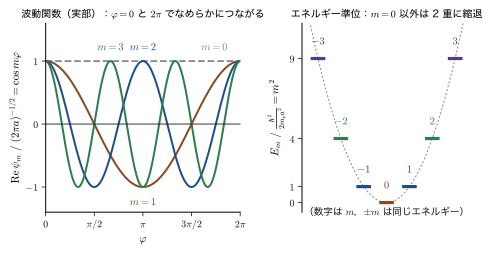
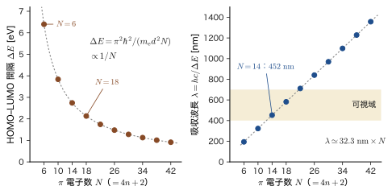
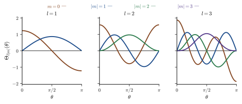

第21章角運動量演算子と回転運動
原子の中の電子は，原子核のまわりを「まわって」いる．この言い方は，実はそのまま正しいわけではない．前章までに水素原子を解いたとき，電子の状態は $1\mathrm{s}$，$2\mathrm{p}$，$3\mathrm{d}$ のような「軌道」で区別され，角度の部分は球面調和関数 $Y_l^m(\theta,\varphi)$ という関数で表された（第14章 14.5，第15章 15.4）．そこでは $l$ と $m$ は，解を得るために方程式に「置いた」定数として現れた．しかし，s，p，d，f という軌道の名前，$\mathrm{p}$ 軌道が 3 個で $\mathrm{d}$ 軌道が 5 個という数え方，磁場の中で原子のスペクトル線が分かれること，遷移金属のイオンの磁石としての性質——こうした材料の性質の多くは，この $l$ と $m$ が角運動量の大きさと向きの量子化であることから決まる．
この章では，まず古典力学の角運動量 $\bm{L}=\bm{r}\times\bm{p}$（AD 03 第2章 2.5）を，運動量を $\hat{\bm{p}}=-i\hbar\nabla$ に置き換えて演算子 $\hat{\bm{L}}$ にする．次に，それを球座標で書き直すと，動径 $r$ での微分が消えて角度 $\theta,\varphi$ の微分だけが残ることを，行を飛ばさずに確かめる．さらに，古典力学では 3 つの成分 $L_x,L_y,L_z$ が同時に決まっていたのに，量子力学では $\hat{L}_x,\hat{L}_y,\hat{L}_z$ が互いに交換せず，同時には確定できないことを，位置と運動量の交換関係 $[\hat{x},\hat{p}]=i\hbar$ だけから導く．これは，「角運動量ベクトルの矢印」を思い描くことが量子力学ではもはやできない，という宣言である．
後半では，回転運動の最も簡単な 2 つの舞台——環（円周の上を動く粒子）と球面（球の表面の上を動く粒子）——で Schrödinger（シュレーディンガー）方程式を解く．環の問題では，円周に波が整数個収まる条件から $L_z=m\hbar$（$m$ は整数）が出てくる．これをベンゼンの $\pi$ 電子に当てはめると，最低の吸収波長がおよそ $212\ \mathrm{nm}$ と見積もられる．実際のベンゼンの吸収はこれより複雑だが，紫外の深い領域にあることは，この 1 行の計算で言い当てられる．球面の問題では，角度方向の方程式から Legendre の陪微分方程式が現れ，$l=0,1,2,\dots$ と $\abs{m}\le l$ が「解が両極で発散しない」という条件から出てくる．環と球面で量子化の理由が違う（周期性と，極 $\theta=0,\pi$ で波動関数が有限であること）ことも，この章の要点である．
この部（第IV部）の見取り図 —— 前の部からのつながり
前の部との違い．第III部（第9〜20章）では，Schrödinger 方程式を，いろいろなポテンシャルの中の粒子について解き，エネルギーの準位と波動関数を求めた．第IV部では，エネルギーとは別の物理量——角運動量——に主役を移す．水素原子の角度部分は，どの中心力ポテンシャルでも共通なので，ここで角運動量そのものを調べておくと，原子・分子・固体のあらゆる場面で使える．
- 第21章（本章） 角運動量を演算子にして，球座標で表し，交換関係を導く．環と球面の上の粒子を解く．
- 第22章 球面調和関数と角運動量の量子化 $\hat{\bm{L}}^2$ の極座標形を導き，$\hat{\bm{L}}^2$ と $\hat{L}_z$ の固有値 $l(l+1)\hbar^2$，$m\hbar$ を確定する．角運動量の大きさが $\sqrt{l(l+1)}\,\hbar$ であることと，ベクトル模型．
- 第23章 スピン 軌道運動では説明できない電子の「もう一つの角運動量」．Stern–Gerlach の実験と Pauli 行列．
- 第24章 昇降演算子と角運動量の行列表示 交換関係だけから，角運動量の固有値と行列を代数的に導く．
- 第25章 角運動量の合成 軌道とスピンを合わせた $\hat{\bm{J}}=\hat{\bm{L}}+\hat{\bm{S}}$ と，$\hat{\bm{L}}\cdot\hat{\bm{S}}$ の固有値問題．
- 第26章 スピン軌道相互作用の物理と磁場中の原子 微細構造と Zeeman 効果．
次の部へ．第V部（第27章〜）の摂動論は，スピン軌道相互作用や磁場の効果を「小さな補正」として扱う道具になる．第VIII部（第43章〜）の配位子場理論では，$l=2$ の $2l+1=5$ 重縮退（本章 21.6 節で現れる縮退の数え方）が結晶場でどう分裂するかを調べる．
- 古典の角運動量 $\bm{L}=\bm{r}\times\bm{p}$ を演算子 $\hat{\bm{L}}=\hat{\bm{r}}\times\hat{\bm{p}}$ にして，$\hat{L}_x,\hat{L}_y,\hat{L}_z$ の直交座標での形と，そのエルミート性を説明できること
- 球座標のナブラと単位ベクトルの変換行列から，$\partial/\partial x$，$\partial/\partial y$，$\partial/\partial z$ の球座標形を求め，$\hat{L}_z=\dfrac{\hbar}{i}\dfrac{\partial}{\partial\varphi}$ などを途中式を省かずに導けること．$\hat{\bm{L}}=-i\hbar\,\bm{r}\times\nabla$ からの別解で，$\hat{\bm{L}}$ が角度にだけ作用することを確かめられること
- $[\hat{x},\hat{p}]=i\hbar$ から $[\hat{L}_x,\hat{L}_y]=i\hbar\hat{L}_z$ など 3 式を導き，3 成分が同時には確定できないこと，$L_z$ が確定した状態で $\expval{\hat{L}_x}=\expval{\hat{L}_y}=0$ となることを示せること
- 環の上の粒子の Schrödinger 方程式を解き，$E=m^2\hbar^2/(2m_{\mathrm{e}}a^2)$，$\psi=e^{im\varphi}/\sqrt{2\pi a}$（$m\in\mathbb{Z}$）と $\hat{L}_z\psi=m\hbar\psi$ を導けること．波動関数の値だけでなく導関数も周期的でなければならない理由を説明できること
- ベンゼンの $\pi$ 電子を環の模型で扱い，最低吸収波長 $\lambda=8\pi^2m_{\mathrm{e}}ca^2/(3h)\approx212\ \mathrm{nm}$ を計算し，実測（$254$，$204$，$184\ \mathrm{nm}$ 付近）との関係を「桁と傾向」として評価できること．$4n+2$ 則と量子リングの準位間隔の見積り
- 球面上の粒子の Schrödinger 方程式を変数分離し，$\Phi''/\Phi=-m^2$，$2m_{\mathrm{e}}a^2E/\hbar^2=l(l+1)$ の置き方，$x=\cos\theta$ の置換，Legendre の陪微分方程式，$l=0,1,2,\dots$ と $\abs{m}\le l$，$E=\hbar^2l(l+1)/(2m_{\mathrm{e}}a^2)$ を導けること．環と球面で量子化の理由が違うことを説明できること
もとにしたノート：望月泰英『物理学ノート 量子力学2』 pp. 25–29．
21.1 古典の角運動量から量子力学の演算子へ
21.1.1 古典力学の角運動量
原点のまわりを運動する質量 $m$ の質点を考える．位置ベクトルを $\bm{r}=(x,y,z)$，運動量を $\bm{p}=m\bm{v}=(p_x,p_y,p_z)$ とする．直進する物体の運動を表すのが運動量であるのに対し，「原点のまわりをどれだけ勢いよくまわっているか」を表す量が角運動量（angular momentum）である．
定義21.1 角運動量（古典力学）
質点の，原点のまわりの角運動量を，位置ベクトルと運動量の外積（ベクトル積．大学数学 第15章 15.3）
\begin{equation} \bm{L}=\bm{r}\times\bm{p}=\bm{r}\times m\bm{v} =\begin{pmatrix}x\\y\\z\end{pmatrix}\times\begin{pmatrix}p_x\\p_y\\p_z\end{pmatrix} =\begin{pmatrix}y\,p_z-z\,p_y\\ z\,p_x-x\,p_z\\ x\,p_y-y\,p_x\end{pmatrix} \label{eq:21-Lclass} \end{equation}で定義する（AD 03 第2章 2.5）．
$\bm{L}$ の向きは，$\bm{r}$ と $\bm{p}$ の両方に垂直で，$\bm{r}$ から $\bm{p}$ へ右ねじをまわしたときにねじの進む向きである（図21.1）．大きさは，$\bm{r}$ と $\bm{p}$ のなす角を $\alpha$ として $\abs{\bm{L}}=rp\sin\alpha$ である．円運動（$\alpha=90^\circ$）なら，円の半径を $r$，速さを $v$ として $L=mvr$ となる．次元は $[\text{質量}][\text{長さ}]^2[\text{時間}]^{-1}$ で，単位は $\mathrm{kg\,m^2\,s^{-1}}=\mathrm{J\,s}$ である．これは Planck 定数 $h$（$\hbar=h/2\pi$）と同じ次元である．つまり $\hbar$ は，角運動量の自然な「ものさしの目盛り」になっている（Bohr の量子条件 $L=n\hbar$ が最初の例である．第5章 5.5，第6章 6.4）．
イメージ：なぜ角運動量が大切なのか — 中心力のもとでの保存量
質点の運動方程式 $\dd\bm{p}/\dd t=\bm{F}$ を使って，$\bm{L}$ の時間変化を求めてみよう．積の微分を使うと，
$$ \frac{\dd\bm{L}}{\dd t}=\frac{\dd\bm{r}}{\dd t}\times\bm{p}+\bm{r}\times\frac{\dd\bm{p}}{\dd t}=\bm{v}\times m\bm{v}+\bm{r}\times\bm{F}=\bm{r}\times\bm{F} $$である（$\bm{v}\times\bm{v}=\bm{0}$ を使った）．右辺 $\bm{r}\times\bm{F}$ は力のモーメントである．力が中心力，つまり原点に向かう（または原点から遠ざかる）向きの力 $\bm{F}\parallel\bm{r}$ なら，$\bm{r}\times\bm{F}=\bm{0}$ となり，$\bm{L}$ は時間によらず一定である（大学基礎物理学 第8章 8.1，Kepler の第2法則）．原子の中の電子が原子核から受ける Coulomb 力は中心力だから，古典的には $\bm{L}$ は一定の「保存量」である．量子力学でも，$\hat{\bm{L}}$ に関する量（$l$ と $m$）が，エネルギーとは別に，原子の状態を見分ける番号になる．これが，第III部で水素原子の軌道に $l$，$m$ が現れた理由である．
外積の覚え方：たすき掛け
式 \eqref{eq:21-Lclass} の 3 成分を，符号まで間違えずに書く覚え方がある．上の段に $x\ \ y\ \ z\ \ x$，下の段に $p_x\ \ p_y\ \ p_z\ \ p_x$ と，最初の文字を右端にもう一度添えて並べる．隣り合う 2 つの列を，上下の文字でたすき掛け（×印）にする（下の図．実線の積が正，破線の積が負）：
$y,z$ の列の×印から $\bm{L}$ の $x$ 成分が，$z,x$ の列の×印から $y$ 成分が，$x,y$ の列の×印から $z$ 成分が得られる．たとえば $x,y$ の列の×では，「上の左」×「下の右」（右下がり）の $x\,p_y$ が正，「上の右」×「下の左」（左下がり）の $y\,p_x$ が負なので，$L_z=x\,p_y-y\,p_x$ となる．同じ規則で $L_x=y\,p_z-z\,p_y$，$L_y=z\,p_x-x\,p_z$ が得られる．右端に $x$ を繰り返すのは，$z$ の次は $x$ に戻る（$x\to y\to z\to x$ の巡回）ことを表す．この巡回の順序は，21.3 節で交換関係を書くときにも現れる．
21.1.2 演算子への置き換え
量子力学では，位置 $x$ には「$x$ を掛ける」演算子 $\hat{x}=x$ が，運動量 $p_x$ には微分演算子
$$ \hat{p}_x=\frac{\hbar}{i}\frac{\partial}{\partial x}=-i\hbar\frac{\partial}{\partial x},\qquad \hat{p}_y=\frac{\hbar}{i}\frac{\partial}{\partial y},\qquad \hat{p}_z=\frac{\hbar}{i}\frac{\partial}{\partial z} $$が対応する（第9章 9.2．$\hbar/i=-i\hbar$ は，$1/i=-i$ による）．3 成分をまとめて $\hat{\bm{p}}=-i\hbar\nabla$ とも書く．古典の角運動量 \eqref{eq:21-Lclass} の $x,y,z,p_x,p_y,p_z$ を，これらの演算子に置き換えたものが，角運動量演算子である．
定義21.2 角運動量演算子
角運動量演算子（angular momentum operator）を，$\hat{\bm{L}}=\hat{\bm{r}}\times\hat{\bm{p}}=-i\hbar\,\bm{r}\times\nabla$ で定義する．その 3 成分は，
\begin{equation} \hat{L}_x=\frac{\hbar}{i}\left(y\frac{\partial}{\partial z}-z\frac{\partial}{\partial y}\right),\quad \hat{L}_y=\frac{\hbar}{i}\left(z\frac{\partial}{\partial x}-x\frac{\partial}{\partial z}\right),\quad \hat{L}_z=\frac{\hbar}{i}\left(x\frac{\partial}{\partial y}-y\frac{\partial}{\partial x}\right) \label{eq:21-Lcart} \end{equation}である．
式 \eqref{eq:21-Lcart} は，式 \eqref{eq:21-Lclass} の $L_x=y\,p_z-z\,p_y$ に $\hat{p}_z=\dfrac{\hbar}{i}\dfrac{\partial}{\partial z}$，$\hat{p}_y=\dfrac{\hbar}{i}\dfrac{\partial}{\partial y}$ を代入しただけである（ほかの 2 つも同様）．演算子は，右に書かれた関数に作用する．たとえば $\hat{L}_z\,f(x,y,z)=\dfrac{\hbar}{i}\left(x\dfrac{\partial f}{\partial y}-y\dfrac{\partial f}{\partial x}\right)$ である．
注意：演算子の積の順序に，迷いはない
量子力学では $\hat{x}\hat{p}_x\ne\hat{p}_x\hat{x}$ のように，演算子の積の順序が結果を変える（第8章 8.4）．古典の式 $L_x=y\,p_z-z\,p_y$ では $y\,p_z=p_z\,y$ なので，演算子に直すとき順序をどう決めるかが気になる．しかし，$\hat{L}_x$ に現れる積 $\hat{y}\,\hat{p}_z$ と $\hat{z}\,\hat{p}_y$ は，どちらも異なる座標の位置と運動量の積である．異なる座標の位置と運動量は交換する（$[\hat{y},\hat{p}_z]=y\dfrac{\partial}{\partial z}-\dfrac{\partial}{\partial z}y=0$，$y$ は $z$ で微分しても変わらないから）ので，$\hat{y}\hat{p}_z=\hat{p}_z\hat{y}$ である．したがって古典の式をそのまま置き換えてよく，順序による曖昧さは生じない．（$x\,p_x$ のような同じ座標の積が現れる量，たとえば動径方向の運動量では，この曖昧さが問題になる．）
定理21.1 $\hat{L}_x,\hat{L}_y,\hat{L}_z$ はエルミート演算子である
$\hat{L}_x^\dagger=\hat{L}_x$，$\hat{L}_y^\dagger=\hat{L}_y$，$\hat{L}_z^\dagger=\hat{L}_z$．したがって，角運動量の測定値（固有値）は実数である（第8章 8.3）．
証明
$\hat{x}$ と $\hat{p}_x$ はエルミートである（第9章 9.6）．積のエルミート共役は順序が逆になる：$(\hat{A}\hat{B})^\dagger=\hat{B}^\dagger\hat{A}^\dagger$．$\hat{L}_x=\hat{y}\hat{p}_z-\hat{z}\hat{p}_y$ について，
$$ \hat{L}_x^\dagger=(\hat{y}\hat{p}_z)^\dagger-(\hat{z}\hat{p}_y)^\dagger=\hat{p}_z^\dagger\hat{y}^\dagger-\hat{p}_y^\dagger\hat{z}^\dagger=\hat{p}_z\hat{y}-\hat{p}_y\hat{z}=\hat{y}\hat{p}_z-\hat{z}\hat{p}_y=\hat{L}_x $$である．最後から 2 番目の等号で，異なる座標の $\hat{p}_z$ と $\hat{y}$，$\hat{p}_y$ と $\hat{z}$ が交換することを使った．$\hat{L}_y,\hat{L}_z$ も同じ計算（添字の巡回 $x\to y\to z\to x$）で示される．
（証明終わり）
例題21.1 角運動量の大きさ：Bohr 模型の電子と地球
(1) Bohr 模型の水素原子の基底状態（半径 $a_0=5.292\times10^{-11}\ \mathrm{m}$，電子の速さ $v=2.188\times10^{6}\ \mathrm{m/s}$）の角運動量 $L=m_{\mathrm{e}}va_0$ を求め，$\hbar$ と比べよ．(2) 地球の公転（質量 $5.972\times10^{24}\ \mathrm{kg}$，軌道半径 $1.496\times10^{11}\ \mathrm{m}$，速さ $2.978\times10^{4}\ \mathrm{m/s}$）の角運動量 $L$ を求め，$\hbar$ の何倍か見積もれ．そして，地球の角運動量が「$\hbar$ 単位で飛び飛び」であることが日常で見えない理由を述べよ．
解答 (1) 円運動なので $\bm{r}\perp\bm{p}$，$L=m_{\mathrm{e}}va_0$ である．$m_{\mathrm{e}}=9.109\times10^{-31}\ \mathrm{kg}$ を使って， $$ L=9.109\times10^{-31}\times2.188\times10^{6}\times5.292\times10^{-11}\ \mathrm{kg\,m^2/s}=1.055\times10^{-34}\ \mathrm{J\,s} $$ となる（計算：$9.109\times2.188=19.93$，$19.93\times5.292=105.5$，指数は $-31+6-11=-36$ なので $105.5\times10^{-36}=1.055\times10^{-34}$）．$\hbar=1.0546\times10^{-34}\ \mathrm{J\,s}$ だから，$L=\hbar$（$L/\hbar=1.000$）である．Bohr の量子条件 $L=n\hbar$ の $n=1$ に対応する．
(2) 円運動とみなして $L=mvR=5.972\times10^{24}\times2.978\times10^{4}\times1.496\times10^{11}\ \mathrm{J\,s}$．$5.972\times2.978=17.78$，$17.78\times1.496=26.61$，指数は $24+4+11=39$ なので $L=2.661\times10^{40}\ \mathrm{J\,s}$ である．よって $$ \frac{L}{\hbar}=\frac{2.661\times10^{40}}{1.0546\times10^{-34}}=2.52\times10^{74} $$ となる．角運動量が $\hbar$ の整数倍に量子化されるとしても，隣り合う値の間隔 $\hbar$ は $L$ の $4\times10^{-75}$ 倍にすぎず，$L$ は連続的に変わるように見える．量子化は，$L/\hbar$ が 1 の桁になるミクロな系（原子・分子）でだけ目に見える．これは，第II部で見た「$h$ が小さいので日常では量子効果が見えない」ことの，角運動量での言い換えである．
例題21.2 直交座標で $\hat{L}_z$ を作用させる
式 \eqref{eq:21-Lcart} の $\hat{L}_z$ を，次の関数に作用させよ：(1) $x+iy$，(2) $z$，(3) $(x+iy)^2$，(4) $x$．固有関数（$\hat{L}_zf=\lambda f$ の形になるもの）はどれか．
解答 $\hat{L}_z=\dfrac{\hbar}{i}\left(x\dfrac{\partial}{\partial y}-y\dfrac{\partial}{\partial x}\right)$ である．
(1) $f=x+iy$ なら $\dfrac{\partial f}{\partial x}=1$，$\dfrac{\partial f}{\partial y}=i$．よって $x\cdot i-y\cdot1=ix-y=i(x+iy)$（$i\cdot iy=-y$ を使った）．したがって $\hat{L}_zf=\dfrac{\hbar}{i}\cdot i\,(x+iy)=\hbar\,(x+iy)$．固有値 $+\hbar$ の固有関数である．
(2) $f=z$ は $x,y$ を含まないので $\dfrac{\partial f}{\partial x}=\dfrac{\partial f}{\partial y}=0$，$\hat{L}_zz=0$．固有値 $0$ の固有関数である．
(3) $f=(x+iy)^2$ なら $\dfrac{\partial f}{\partial x}=2(x+iy)$，$\dfrac{\partial f}{\partial y}=2i(x+iy)$．$x\cdot2i(x+iy)-y\cdot2(x+iy)=2(x+iy)(ix-y)=2(x+iy)\cdot i(x+iy)=2i\,(x+iy)^2$．したがって $\hat{L}_zf=\dfrac{\hbar}{i}\cdot2i\,(x+iy)^2=2\hbar\,(x+iy)^2$．固有値 $2\hbar$ の固有関数である．
(4) $f=x$ なら $\dfrac{\partial f}{\partial x}=1$，$\dfrac{\partial f}{\partial y}=0$．$\hat{L}_zx=\dfrac{\hbar}{i}(-y)=i\hbar\,y$．これは $x$ の定数倍ではないので，固有関数ではない．同様に $\hat{L}_zy=\dfrac{\hbar}{i}x=-i\hbar\,x$．
結果をまとめると，$x+iy$，$z$，$(x+iy)^2$ が，それぞれ固有値 $\hbar$，$0$，$2\hbar$ の固有関数になる．$x-iy$ には固有値 $-\hbar$ が対応する（$\hat{L}_z(x-iy)=\dfrac{\hbar}{i}(x\cdot(-i)-y)=\dfrac{\hbar}{i}(-i)(x-iy)=-\hbar(x-iy)$）．球座標で $x\pm iy=r\sin\theta\,e^{\pm i\varphi}$ だから，これらは $l=1$ の $\mathrm{p}$ 軌道の $m=\pm1$（$Y_1^{\pm1}\propto\sin\theta\,e^{\pm i\varphi}$，第14章の表14.1），$z\propto\cos\theta$ が $m=0$ にあたり，$(x+iy)^2$ は $l=2$，$m=2$ の $\mathrm{d}$ 軌道の角度部分に比例する．実数の軌道 $x$，$y$ は $\hat{L}_z$ の固有関数ではなく，$m=+1$ と $m=-1$ の重ね合わせである（$x=\tfrac12\left[(x+iy)+(x-iy)\right]$）．
21.2 球座標での角運動量演算子
原子は球対称に近く，ポテンシャルは原点からの距離 $r$ だけで決まる．そこで角運動量演算子 \eqref{eq:21-Lcart} を，球座標 $(r,\theta,\varphi)$ で書き直したい．そうすると，$\hat{L}_z$ が $\dfrac{\partial}{\partial\varphi}$ の 1 項だけになるなど，式が驚くほど簡単になる．この節は，そのための計算を行を飛ばさずに行う．
21.2.1 球座標と 3 つの単位ベクトル
球座標 $(r,\theta,\varphi)$ は，原点からの距離 $r$，$z$ 軸からの角（天頂角）$\theta$（$0\le\theta\le\pi$），$x$ 軸から測った方位角 $\varphi$（$0\le\varphi\lt2\pi$）で点を表す（図21.2）．直交座標との関係は
\begin{equation} x=r\sin\theta\cos\varphi,\qquad y=r\sin\theta\sin\varphi,\qquad z=r\cos\theta \label{eq:21-xyz} \end{equation}である（大学数学 第16章 16.3）．本書では方位角を $\varphi$ と書き，波動関数や軌道の記号 $\phi$ とは区別する．
点 P の位置ベクトル $\bm{r}=(r\sin\theta\cos\varphi,\ r\sin\theta\sin\varphi,\ r\cos\theta)$ を，$r,\theta,\varphi$ の 1 つだけを変えて微分すると，その座標が増える向きが得られる：
$$ \frac{\partial\bm{r}}{\partial r}=\begin{pmatrix}\sin\theta\cos\varphi\\ \sin\theta\sin\varphi\\ \cos\theta\end{pmatrix},\quad \frac{\partial\bm{r}}{\partial\theta}=r\begin{pmatrix}\cos\theta\cos\varphi\\ \cos\theta\sin\varphi\\ -\sin\theta\end{pmatrix},\quad \frac{\partial\bm{r}}{\partial\varphi}=r\sin\theta\begin{pmatrix}-\sin\varphi\\ \cos\varphi\\ 0\end{pmatrix} $$3 つのベクトルの長さは，$1,\ r,\ r\sin\theta$ である（たとえば 2 番目は $r\sqrt{\cos^2\theta(\cos^2\varphi+\sin^2\varphi)+\sin^2\theta}=r$）．長さを 1 にそろえたものが，球座標の単位ベクトルである：
\begin{equation} \bm{e}_r=\begin{pmatrix}\sin\theta\cos\varphi\\ \sin\theta\sin\varphi\\ \cos\theta\end{pmatrix},\quad \bm{e}_\theta=\begin{pmatrix}\cos\theta\cos\varphi\\ \cos\theta\sin\varphi\\ -\sin\theta\end{pmatrix},\quad \bm{e}_\varphi=\begin{pmatrix}-\sin\varphi\\ \cos\varphi\\ 0\end{pmatrix} \label{eq:21-eunit} \end{equation}これらは互いに直交し，$\bm{e}_r\times\bm{e}_\theta=\bm{e}_\varphi$，$\bm{e}_\theta\times\bm{e}_\varphi=\bm{e}_r$，$\bm{e}_\varphi\times\bm{e}_r=\bm{e}_\theta$ が成り立つ（たとえば $\bm{e}_r\times\bm{e}_\varphi$ の $z$ 成分は $\sin\theta\cos\varphi\cdot\cos\varphi-\sin\theta\sin\varphi\cdot(-\sin\varphi)=\sin\theta$ で，これは $-\bm{e}_\theta$ の $z$ 成分 $+\sin\theta$ と一致する）．なお，直交座標の単位ベクトル $\bm{e}_x,\bm{e}_y,\bm{e}_z$ と違い，$\bm{e}_r,\bm{e}_\theta,\bm{e}_\varphi$ の向きは点 P の位置によって変わる．
21.2.2 単位ベクトルの変換行列
$\bm{e}_x$ を，球座標の単位ベクトルで展開しよう．$\bm{e}_r,\bm{e}_\theta,\bm{e}_\varphi$ は正規直交なので，$\bm{e}_x=(\bm{e}_x\cdot\bm{e}_r)\,\bm{e}_r+(\bm{e}_x\cdot\bm{e}_\theta)\,\bm{e}_\theta+(\bm{e}_x\cdot\bm{e}_\varphi)\,\bm{e}_\varphi$ である．式 \eqref{eq:21-eunit} の第 1 成分を読むと，$\bm{e}_x\cdot\bm{e}_r=\sin\theta\cos\varphi$，$\bm{e}_x\cdot\bm{e}_\theta=\cos\theta\cos\varphi$，$\bm{e}_x\cdot\bm{e}_\varphi=-\sin\varphi$ である．$\bm{e}_y,\bm{e}_z$ も同様に，第 2，第 3 成分を読めばよい．3 つをまとめて行列で書くと，
\begin{equation} \begin{pmatrix}\bm{e}_x\\ \bm{e}_y\\ \bm{e}_z\end{pmatrix} =\underbrace{\begin{pmatrix} \sin\theta\cos\varphi & \cos\theta\cos\varphi & -\sin\varphi\\ \sin\theta\sin\varphi & \cos\theta\sin\varphi & \cos\varphi\\ \cos\theta & -\sin\theta & 0 \end{pmatrix}}_{\displaystyle M} \begin{pmatrix}\bm{e}_r\\ \bm{e}_\theta\\ \bm{e}_\varphi\end{pmatrix} \label{eq:21-emat} \end{equation}となる．行列 $M$ の第 $i$ 行は，直交座標の単位ベクトル $\bm{e}_i$ の，球座標の基底での成分である．$M$ の 3 つの列は式 \eqref{eq:21-eunit} の 3 つのベクトルそのもの（$\bm{e}_r,\bm{e}_\theta,\bm{e}_\varphi$ の $x,y,z$ 成分）で，互いに直交する単位ベクトルだから，$M$ は直交行列（$M^{\mathsf T}M=1$，$M^{-1}=M^{\mathsf T}$）である（大学数学 第16章 16.4）．
21.2.3 球座標のナブラ
ナブラ $\nabla$ は，関数 $f$ に作用させると $f$ が最も増える向きを向くベクトル $\nabla f$（勾配）を与える演算子である．球座標での形は，次のように導ける．点 P を微小にずらす変位ベクトルは，各座標を $\dd r,\dd\theta,\dd\varphi$ だけ変えると，$\dd\bm{r}=\bm{e}_r\,\dd r+\bm{e}_\theta\,r\dd\theta+\bm{e}_\varphi\,r\sin\theta\,\dd\varphi$ である（上で求めた 3 つの長さ $1,r,r\sin\theta$ による）．一方，$f$ の変化は $\dd f=\dfrac{\partial f}{\partial r}\dd r+\dfrac{\partial f}{\partial\theta}\dd\theta+\dfrac{\partial f}{\partial\varphi}\dd\varphi$ であり，これは $\nabla f\cdot\dd\bm{r}$ に等しい．$\nabla f=a\,\bm{e}_r+b\,\bm{e}_\theta+c\,\bm{e}_\varphi$ とおくと $\nabla f\cdot\dd\bm{r}=a\,\dd r+b\,r\dd\theta+c\,r\sin\theta\,\dd\varphi$ なので，係数を比べて $a=\dfrac{\partial f}{\partial r}$，$b=\dfrac1r\dfrac{\partial f}{\partial\theta}$，$c=\dfrac{1}{r\sin\theta}\dfrac{\partial f}{\partial\varphi}$ を得る．すなわち
\begin{equation} \nabla=\bm{e}_r\frac{\partial}{\partial r}+\bm{e}_\theta\frac1r\frac{\partial}{\partial\theta}+\bm{e}_\varphi\frac{1}{r\sin\theta}\frac{\partial}{\partial\varphi} \label{eq:21-nabla} \end{equation}である（大学数学 第16章 16.5）．角度で微分するときに $1/r$ や $1/(r\sin\theta)$ が付くのは，角度 $\dd\theta$ だけ動いたときの実際の移動距離が $r\dd\theta$，$\dd\varphi$ だけ動いたときが $r\sin\theta\,\dd\varphi$ だからである（$\varphi$ 方向の動きは，$z$ 軸からの距離 $r\sin\theta$ を半径とする円の上を動く）．
21.2.4 $\partial/\partial x$，$\partial/\partial y$，$\partial/\partial z$ の球座標形
ナブラは，直交座標の単位ベクトルでは $\nabla=\bm{e}_x\dfrac{\partial}{\partial x}+\bm{e}_y\dfrac{\partial}{\partial y}+\bm{e}_z\dfrac{\partial}{\partial z}$ と書ける．同じベクトル $\nabla$ を，球座標の単位ベクトルで書いたものが式 \eqref{eq:21-nabla} である．直交座標での成分 $\dfrac{\partial}{\partial x_i}=\bm{e}_i\cdot\nabla$（$x_1,x_2,x_3=x,y,z$）を，式 \eqref{eq:21-nabla} から求めよう．式 \eqref{eq:21-nabla} を $\nabla=\sum_j\bm{e}^{\mathrm{s}}_j\,\nabla^{\mathrm{s}}_j$ と書く（$\bm{e}^{\mathrm{s}}_j$ は $\bm{e}_r,\bm{e}_\theta,\bm{e}_\varphi$，$\nabla^{\mathrm{s}}_j$ は $\dfrac{\partial}{\partial r},\ \dfrac1r\dfrac{\partial}{\partial\theta},\ \dfrac{1}{r\sin\theta}\dfrac{\partial}{\partial\varphi}$）．内積 $\bm{e}_i\cdot\bm{e}^{\mathrm{s}}_j$ は行列 $M$ の $(i,j)$ 成分 $M_{ij}$ だから，$\dfrac{\partial}{\partial x_i}=\sum_jM_{ij}\nabla^{\mathrm{s}}_j$ である．すなわち，基底ベクトルの変換 \eqref{eq:21-emat} と同じ行列 $M$ を，$\nabla$ の球座標での成分に掛ければよい．
\begin{equation} \begin{pmatrix}\dfrac{\partial}{\partial x}\\[2mm] \dfrac{\partial}{\partial y}\\[2mm] \dfrac{\partial}{\partial z}\end{pmatrix} =\begin{pmatrix} \sin\theta\cos\varphi & \cos\theta\cos\varphi & -\sin\varphi\\ \sin\theta\sin\varphi & \cos\theta\sin\varphi & \cos\varphi\\ \cos\theta & -\sin\theta & 0 \end{pmatrix} \begin{pmatrix}\dfrac{\partial}{\partial r}\\[2mm] \dfrac1r\dfrac{\partial}{\partial\theta}\\[2mm] \dfrac{1}{r\sin\theta}\dfrac{\partial}{\partial\varphi}\end{pmatrix} \label{eq:21-dmat} \end{equation}である．行列の積を実行すると，3 つの式に分かれる：
\begin{equation} \begin{aligned} \frac{\partial}{\partial x}&=\sin\theta\cos\varphi\,\frac{\partial}{\partial r}+\frac{\cos\theta\cos\varphi}{r}\frac{\partial}{\partial\theta}-\frac{\sin\varphi}{r\sin\theta}\frac{\partial}{\partial\varphi}\\ \frac{\partial}{\partial y}&=\sin\theta\sin\varphi\,\frac{\partial}{\partial r}+\frac{\cos\theta\sin\varphi}{r}\frac{\partial}{\partial\theta}+\frac{\cos\varphi}{r\sin\theta}\frac{\partial}{\partial\varphi}\\ \frac{\partial}{\partial z}&=\cos\theta\,\frac{\partial}{\partial r}-\frac{\sin\theta}{r}\frac{\partial}{\partial\theta} \end{aligned} \label{eq:21-dxyz} \end{equation}（第 3 式では，行列の第 3 行 $(\cos\theta,-\sin\theta,0)$ の最後の成分が $0$ なので，$\varphi$ 微分は現れない．$z$ 軸のまわりの回転で $z$ は変わらないからである．）
21.2.5 $\hat{L}_x,\hat{L}_y,\hat{L}_z$ の球座標形
式 \eqref{eq:21-Lcart} に，$x=r\sin\theta\cos\varphi$，$y=r\sin\theta\sin\varphi$，$z=r\cos\theta$ と式 \eqref{eq:21-dxyz} を代入する．まず，最も簡単な $\hat{L}_z$ から始める．
導出：$\hat{L}_z$ の球座標形
$\hat{L}_z=\dfrac{\hbar}{i}\left(x\dfrac{\partial}{\partial y}-y\dfrac{\partial}{\partial x}\right)$ の括弧の中を，項ごとに計算する．
$$ \begin{aligned} x\frac{\partial}{\partial y}&=r\sin\theta\cos\varphi\left[\sin\theta\sin\varphi\frac{\partial}{\partial r}+\frac{\cos\theta\sin\varphi}{r}\frac{\partial}{\partial\theta}+\frac{\cos\varphi}{r\sin\theta}\frac{\partial}{\partial\varphi}\right]\\ &=r\sin^2\theta\sin\varphi\cos\varphi\frac{\partial}{\partial r}+\sin\theta\cos\theta\sin\varphi\cos\varphi\frac{\partial}{\partial\theta}+\cos^2\varphi\frac{\partial}{\partial\varphi},\\[2mm] y\frac{\partial}{\partial x}&=r\sin\theta\sin\varphi\left[\sin\theta\cos\varphi\frac{\partial}{\partial r}+\frac{\cos\theta\cos\varphi}{r}\frac{\partial}{\partial\theta}-\frac{\sin\varphi}{r\sin\theta}\frac{\partial}{\partial\varphi}\right]\\ &=r\sin^2\theta\sin\varphi\cos\varphi\frac{\partial}{\partial r}+\sin\theta\cos\theta\sin\varphi\cos\varphi\frac{\partial}{\partial\theta}-\sin^2\varphi\frac{\partial}{\partial\varphi} \end{aligned} $$差をとると，$\dfrac{\partial}{\partial r}$ の項と $\dfrac{\partial}{\partial\theta}$ の項は両方の式で同じなので打ち消し合い，残るのは $(\cos^2\varphi+\sin^2\varphi)\dfrac{\partial}{\partial\varphi}=\dfrac{\partial}{\partial\varphi}$ だけである．よって $\hat{L}_z=\dfrac{\hbar}{i}\dfrac{\partial}{\partial\varphi}$ を得る．
（導出終わり）
導出：$\hat{L}_x$ の球座標形
$\hat{L}_x=\dfrac{\hbar}{i}\left(y\dfrac{\partial}{\partial z}-z\dfrac{\partial}{\partial y}\right)$ の括弧の中を，項ごとに計算する．
$$ \begin{aligned} y\frac{\partial}{\partial z}&=r\sin\theta\sin\varphi\left[\cos\theta\frac{\partial}{\partial r}-\frac{\sin\theta}{r}\frac{\partial}{\partial\theta}\right] =r\sin\theta\cos\theta\sin\varphi\frac{\partial}{\partial r}-\sin^2\theta\sin\varphi\frac{\partial}{\partial\theta},\\[2mm] z\frac{\partial}{\partial y}&=r\cos\theta\left[\sin\theta\sin\varphi\frac{\partial}{\partial r}+\frac{\cos\theta\sin\varphi}{r}\frac{\partial}{\partial\theta}+\frac{\cos\varphi}{r\sin\theta}\frac{\partial}{\partial\varphi}\right]\\ &=r\sin\theta\cos\theta\sin\varphi\frac{\partial}{\partial r}+\cos^2\theta\sin\varphi\frac{\partial}{\partial\theta}+\frac{\cos\theta\cos\varphi}{\sin\theta}\frac{\partial}{\partial\varphi} \end{aligned} $$差をとると，$\dfrac{\partial}{\partial r}$ の項が打ち消し合い，$\dfrac{\partial}{\partial\theta}$ の係数は $-(\sin^2\theta+\cos^2\theta)\sin\varphi=-\sin\varphi$，$\dfrac{\partial}{\partial\varphi}$ の係数は $-\dfrac{\cos\theta}{\sin\theta}\cos\varphi=-\dfrac{\cos\varphi}{\tan\theta}$ となる：
$$ y\frac{\partial}{\partial z}-z\frac{\partial}{\partial y}=-\sin\varphi\frac{\partial}{\partial\theta}-\frac{\cos\varphi}{\tan\theta}\frac{\partial}{\partial\varphi} $$よって $\hat{L}_x=-\dfrac{\hbar}{i}\left(\sin\varphi\dfrac{\partial}{\partial\theta}+\dfrac{\cos\varphi}{\tan\theta}\dfrac{\partial}{\partial\varphi}\right)$ である．
（導出終わり）
導出：$\hat{L}_y$ の球座標形
$\hat{L}_y=\dfrac{\hbar}{i}\left(z\dfrac{\partial}{\partial x}-x\dfrac{\partial}{\partial z}\right)$ の括弧の中を，項ごとに計算する．
$$ \begin{aligned} z\frac{\partial}{\partial x}&=r\cos\theta\left[\sin\theta\cos\varphi\frac{\partial}{\partial r}+\frac{\cos\theta\cos\varphi}{r}\frac{\partial}{\partial\theta}-\frac{\sin\varphi}{r\sin\theta}\frac{\partial}{\partial\varphi}\right]\\ &=r\sin\theta\cos\theta\cos\varphi\frac{\partial}{\partial r}+\cos^2\theta\cos\varphi\frac{\partial}{\partial\theta}-\frac{\cos\theta\sin\varphi}{\sin\theta}\frac{\partial}{\partial\varphi},\\[2mm] x\frac{\partial}{\partial z}&=r\sin\theta\cos\varphi\left[\cos\theta\frac{\partial}{\partial r}-\frac{\sin\theta}{r}\frac{\partial}{\partial\theta}\right] =r\sin\theta\cos\theta\cos\varphi\frac{\partial}{\partial r}-\sin^2\theta\cos\varphi\frac{\partial}{\partial\theta} \end{aligned} $$差をとると，$\dfrac{\partial}{\partial r}$ の項が打ち消し合い，$\dfrac{\partial}{\partial\theta}$ の係数は $(\cos^2\theta+\sin^2\theta)\cos\varphi=\cos\varphi$，$\dfrac{\partial}{\partial\varphi}$ の係数は $-\dfrac{\sin\varphi}{\tan\theta}$ となる．よって $\hat{L}_y=\dfrac{\hbar}{i}\left(\cos\varphi\dfrac{\partial}{\partial\theta}-\dfrac{\sin\varphi}{\tan\theta}\dfrac{\partial}{\partial\varphi}\right)=-\dfrac{\hbar}{i}\left(-\cos\varphi\dfrac{\partial}{\partial\theta}+\dfrac{\sin\varphi}{\tan\theta}\dfrac{\partial}{\partial\varphi}\right)$ である．
（導出終わり）
公式21.1 角運動量演算子の球座標形
\begin{equation} \begin{aligned} \hat{L}_x&=-\frac{\hbar}{i}\left(\sin\varphi\frac{\partial}{\partial\theta}+\frac{\cos\varphi}{\tan\theta}\frac{\partial}{\partial\varphi}\right)=i\hbar\left(\sin\varphi\frac{\partial}{\partial\theta}+\cot\theta\cos\varphi\frac{\partial}{\partial\varphi}\right),\\ \hat{L}_y&=-\frac{\hbar}{i}\left(-\cos\varphi\frac{\partial}{\partial\theta}+\frac{\sin\varphi}{\tan\theta}\frac{\partial}{\partial\varphi}\right)=i\hbar\left(-\cos\varphi\frac{\partial}{\partial\theta}+\cot\theta\sin\varphi\frac{\partial}{\partial\varphi}\right),\\ \hat{L}_z&=\frac{\hbar}{i}\frac{\partial}{\partial\varphi}=-i\hbar\frac{\partial}{\partial\varphi} \end{aligned} \label{eq:21-Lsph} \end{equation}（$-\hbar/i=i\hbar$．$\cot\theta=1/\tan\theta$．）どの成分にも $\partial/\partial r$ が現れない．
$\partial/\partial r$ が現れないのは偶然ではなく，$\bm{L}=\bm{r}\times\bm{p}$ が「$\bm{r}$ に垂直な向きの運動量」だけを拾うことの結果である（次項）．これは重要な性質である．$\hat{\bm{L}}$ は角度 $\theta,\varphi$ だけに作用し，動径 $r$ には作用しない．したがって，$r$ だけの関数 $F(r)$ にはどの成分も作用して $0$ を与え，s 状態（$l=0$）の角運動量は $0$ である（演習21.5）．
21.2.6 別解：$\hat{\bm{L}}=-i\hbar\,\bm{r}\times\nabla$ から
ベクトル演算のまま $\hat{\bm{L}}$ を計算すると，成分の計算を通らずに答えが出る．$\bm{r}=r\,\bm{e}_r$ と式 \eqref{eq:21-nabla} から，
$$ \bm{r}\times\nabla=r\,\bm{e}_r\times\left(\bm{e}_r\frac{\partial}{\partial r}+\bm{e}_\theta\frac1r\frac{\partial}{\partial\theta}+\bm{e}_\varphi\frac{1}{r\sin\theta}\frac{\partial}{\partial\varphi}\right) =(\bm{e}_r\times\bm{e}_r)\,r\frac{\partial}{\partial r}+(\bm{e}_r\times\bm{e}_\theta)\frac{\partial}{\partial\theta}+(\bm{e}_r\times\bm{e}_\varphi)\frac{1}{\sin\theta}\frac{\partial}{\partial\varphi} $$である．$\bm{e}_r\times\bm{e}_r=\bm{0}$，$\bm{e}_r\times\bm{e}_\theta=\bm{e}_\varphi$，$\bm{e}_r\times\bm{e}_\varphi=-\bm{e}_\theta$ なので，
\begin{equation} \hat{\bm{L}}=-i\hbar\,\bm{r}\times\nabla=-i\hbar\left(\bm{e}_\varphi\frac{\partial}{\partial\theta}-\bm{e}_\theta\frac{1}{\sin\theta}\frac{\partial}{\partial\varphi}\right) \label{eq:21-Lvec} \end{equation}を得る．$\partial/\partial r$ の項は，$\bm{e}_r\times\bm{e}_r=\bm{0}$ のために消える．つまり $\hat{\bm{L}}$ には，$\bm{e}_r$ 方向の成分そのものがなく，$\bm{e}_\theta$ と $\bm{e}_\varphi$ 方向の成分だけがある（$\bm{L}=\bm{r}\times\bm{p}$ が $\bm{r}$ に垂直であることと一致する）．各成分は，式 \eqref{eq:21-Lvec} と，式 \eqref{eq:21-emat} の行列 $M$ から読み取った内積 $\bm{e}_x\cdot\bm{e}_\theta=\cos\theta\cos\varphi$，$\bm{e}_x\cdot\bm{e}_\varphi=-\sin\varphi$，$\bm{e}_y\cdot\bm{e}_\theta=\cos\theta\sin\varphi$，$\bm{e}_y\cdot\bm{e}_\varphi=\cos\varphi$，$\bm{e}_z\cdot\bm{e}_\theta=-\sin\theta$，$\bm{e}_z\cdot\bm{e}_\varphi=0$ で得られる：
$$ \begin{aligned} \hat{L}_x&=\bm{e}_x\cdot\hat{\bm{L}}=-i\hbar\left[(-\sin\varphi)\frac{\partial}{\partial\theta}-\frac{\cos\theta\cos\varphi}{\sin\theta}\frac{\partial}{\partial\varphi}\right]=i\hbar\left(\sin\varphi\frac{\partial}{\partial\theta}+\frac{\cos\varphi}{\tan\theta}\frac{\partial}{\partial\varphi}\right),\\ \hat{L}_y&=\bm{e}_y\cdot\hat{\bm{L}}=-i\hbar\left[\cos\varphi\frac{\partial}{\partial\theta}-\frac{\cos\theta\sin\varphi}{\sin\theta}\frac{\partial}{\partial\varphi}\right]=i\hbar\left(-\cos\varphi\frac{\partial}{\partial\theta}+\frac{\sin\varphi}{\tan\theta}\frac{\partial}{\partial\varphi}\right),\\ \hat{L}_z&=\bm{e}_z\cdot\hat{\bm{L}}=-i\hbar\left[0\cdot\frac{\partial}{\partial\theta}-\frac{(-\sin\theta)}{\sin\theta}\frac{\partial}{\partial\varphi}\right]=-i\hbar\frac{\partial}{\partial\varphi} \end{aligned} $$となり，式 \eqref{eq:21-Lsph} と一致する．同じ結果が 2 通りに出たことが，計算の検算にもなっている．
イメージ：$\hat{L}_z=\dfrac{\hbar}{i}\dfrac{\partial}{\partial\varphi}$ は「$z$ 軸のまわりの回転」を生む
関数 $f(r,\theta,\varphi)$ の形を，$z$ 軸のまわりに角 $\delta$ だけ（反時計回りに）回すと，新しい関数は，元の関数の値を $\varphi$ 方向に $-\delta$ ずらしたもの $f(r,\theta,\varphi-\delta)$ になる．$\delta$ が小さいときは，Taylor 展開して
$$ f(r,\theta,\varphi-\delta)\approx f-\delta\frac{\partial f}{\partial\varphi}=\left(1-\frac{i}{\hbar}\,\delta\,\hat{L}_z\right)f $$となる（$\dfrac{\partial}{\partial\varphi}=\dfrac{i}{\hbar}\hat{L}_z$ を使った）．すなわち，微小な回転は $1-\dfrac{i}{\hbar}\delta\hat{L}_z$ で表され，$\hat{L}_z$ は「$z$ 軸まわりの回転を生み出す演算子」（生成子）である．直交座標では，同じことが $x\dfrac{\partial}{\partial y}-y\dfrac{\partial}{\partial x}$ と書ける（回転で $(x,y)\to(x+\delta y,\ y-\delta x)$ と変わるので，$f(x+\delta y,y-\delta x)\approx f-\delta\left(x\dfrac{\partial f}{\partial y}-y\dfrac{\partial f}{\partial x}\right)$ である）．有限の角 $\delta$ の回転は $e^{-i\delta\hat{L}_z/\hbar}$ で，これが $\hat{L}_z$ の固有関数 $e^{im\varphi}$ に作用すると $e^{-im\delta}$ という位相が掛かるだけになる．運動量 $\hat{p}$ が「並進の生成子」であるのと対になっている（$e^{-ia\hat{p}/\hbar}$ が並進）．この見方は，第24章以降と，群論（第45章）で本格的に使われる．
例題21.3 極座標形の検算
$f=z$ に $\hat{L}_x$ を，直交座標形 \eqref{eq:21-Lcart} と球座標形 \eqref{eq:21-Lsph} の両方で作用させて，結果が一致することを確かめよ．同様に，$f=x$ に $\hat{L}_z$ を作用させて確かめよ．
解答 直交座標形：$\hat{L}_x=\dfrac{\hbar}{i}\left(y\dfrac{\partial}{\partial z}-z\dfrac{\partial}{\partial y}\right)$ を $f=z$ に作用させると，$\dfrac{\partial z}{\partial z}=1$，$\dfrac{\partial z}{\partial y}=0$ なので $\hat{L}_xz=\dfrac{\hbar}{i}\,y=-i\hbar\,y$．
球座標形：$z=r\cos\theta$ なので $\dfrac{\partial z}{\partial\theta}=-r\sin\theta$，$\dfrac{\partial z}{\partial\varphi}=0$．$\hat{L}_x=i\hbar\left(\sin\varphi\dfrac{\partial}{\partial\theta}+\dfrac{\cos\varphi}{\tan\theta}\dfrac{\partial}{\partial\varphi}\right)$ より $\hat{L}_xz=i\hbar\sin\varphi\cdot(-r\sin\theta)=-i\hbar\,r\sin\theta\sin\varphi=-i\hbar\,y$．両者は一致する．
$f=x$ に $\hat{L}_z$：直交座標形では $\hat{L}_zx=\dfrac{\hbar}{i}\left(x\cdot0-y\cdot1\right)=-\dfrac{\hbar}{i}y=i\hbar\,y$．球座標形では $x=r\sin\theta\cos\varphi$，$\dfrac{\partial x}{\partial\varphi}=-r\sin\theta\sin\varphi=-y$ なので $\hat{L}_zx=\dfrac{\hbar}{i}(-y)=i\hbar\,y$．一致する（$\dfrac{1}{i}=-i$ を使った）．
さらに $\hat{L}_y$ を $f=z$ に作用させると，直交座標形は $\dfrac{\hbar}{i}\left(z\dfrac{\partial z}{\partial x}-x\dfrac{\partial z}{\partial z}\right)=-\dfrac{\hbar}{i}x=i\hbar\,x$，球座標形は $i\hbar\left(-\cos\varphi\right)(-r\sin\theta)=i\hbar\,r\sin\theta\cos\varphi=i\hbar\,x$ で，やはり一致する．これらの結果は，ベクトル形 \eqref{eq:21-Lvec} と $\bm{e}_z\cdot\bm{e}_\theta=-\sin\theta$ などの内積とも矛盾しない．
21.3 角運動量の交換関係と「同時に確定できない」こと
古典力学では，角運動量ベクトル $\bm{L}$ の 3 つの成分は，同じ瞬間にすべて値をもつ．惑星の公転面の向きと角運動量の大きさを，同時にいくらでも正確に言える．量子力学ではそうならない．$\hat{L}_x,\hat{L}_y,\hat{L}_z$ は互いに交換しない．この事実は，実験（Stern–Gerlach の実験，第23章）と原子のスペクトルの構造の根本にある．ここでは，位置と運動量の交換関係だけから，それを導く．
21.3.1 出発点：位置と運動量の基本交換関係
出発点は，量子力学の第2原理（公理8.4）である．3 次元では，位置 $\hat{x}_i$（$\hat{x}_1,\hat{x}_2,\hat{x}_3=\hat{x},\hat{y},\hat{z}$）と運動量 $\hat{p}_j$（$\hat{p}_1,\hat{p}_2,\hat{p}_3=\hat{p}_x,\hat{p}_y,\hat{p}_z$）に対して
\begin{equation} \comm{\hat{x}_i}{\hat{p}_j}=i\hbar\,\delta_{ij},\qquad\comm{\hat{x}_i}{\hat{x}_j}=0,\qquad\comm{\hat{p}_i}{\hat{p}_j}=0 \label{eq:21-basic} \end{equation}である．$\delta_{ij}$ は $i=j$ のとき $1$，$i\ne j$ のとき $0$ の Kronecker のデルタである．言い換えると，同じ座標の位置と運動量（$\hat{x}$ と $\hat{p}_x$，$\hat{y}$ と $\hat{p}_y$，$\hat{z}$ と $\hat{p}_z$）だけが交換せず，それ以外の組は，すべて交換する．たとえば $\comm{\hat{y}}{\hat{p}_z}=0$，$\comm{\hat{p}_x}{\hat{p}_y}=0$（偏微分の順序を入れ替えても同じ）である．これに，交換子の公式（公式8.1 の (iii)：$\comm{\hat{A}}{\hat{B}\hat{C}}=\comm{\hat{A}}{\hat{B}}\hat{C}+\hat{B}\comm{\hat{A}}{\hat{C}}$，$\comm{\hat{A}\hat{B}}{\hat{C}}=\hat{A}\comm{\hat{B}}{\hat{C}}+\comm{\hat{A}}{\hat{C}}\hat{B}$）を組み合わせると，位置と運動量の積の交換子を計算できる．次の導出では，交換しない組が 1 つだけの積の交換子を，定義 $\comm{\hat{A}}{\hat{B}}=\hat{A}\hat{B}-\hat{B}\hat{A}$ に戻って，1 行ずつ計算する．
21.3.2 $\comm{\hat{L}_x}{\hat{L}_y}=i\hbar\hat{L}_z$ の導出
導出：$\comm{\hat{L}_x}{\hat{L}_y}$
$\hat{L}_x=\hat{y}\hat{p}_z-\hat{z}\hat{p}_y$，$\hat{L}_y=\hat{z}\hat{p}_x-\hat{x}\hat{p}_z$ を代入し，交換子の線形性（公式8.1 (ii)）で 4 つの項に分ける：
$$ \comm{\hat{L}_x}{\hat{L}_y}=\comm{\hat{y}\hat{p}_z-\hat{z}\hat{p}_y}{\hat{z}\hat{p}_x-\hat{x}\hat{p}_z} =\underbrace{\comm{\hat{y}\hat{p}_z}{\hat{z}\hat{p}_x}}_{\text{(i)}}-\underbrace{\comm{\hat{y}\hat{p}_z}{\hat{x}\hat{p}_z}}_{\text{(ii)}}-\underbrace{\comm{\hat{z}\hat{p}_y}{\hat{z}\hat{p}_x}}_{\text{(iii)}}+\underbrace{\comm{\hat{z}\hat{p}_y}{\hat{x}\hat{p}_z}}_{\text{(iv)}} $$各項を，定義 $\comm{\hat{A}}{\hat{B}}=\hat{A}\hat{B}-\hat{B}\hat{A}$ に戻って計算する．基本交換関係 \eqref{eq:21-basic} により，交換しないのは $\hat{z}$ と $\hat{p}_z$ の組だけで，それ以外の因子はすべて自由に順序を入れ替えられる．
(i) $\hat{y}\hat{p}_z\cdot\hat{z}\hat{p}_x-\hat{z}\hat{p}_x\cdot\hat{y}\hat{p}_z$．$\hat{y}$ と $\hat{p}_x$ は他のすべての因子と交換するので，前に出して $\hat{y}\hat{p}_x\left(\hat{p}_z\hat{z}-\hat{z}\hat{p}_z\right)=\hat{y}\hat{p}_x\comm{\hat{p}_z}{\hat{z}}=\hat{y}\hat{p}_x\cdot(-i\hbar)=-i\hbar\,\hat{y}\hat{p}_x$（$\comm{\hat{p}_z}{\hat{z}}=-\comm{\hat{z}}{\hat{p}_z}=-i\hbar$）．
(ii) $\hat{y}\hat{p}_z\hat{x}\hat{p}_z-\hat{x}\hat{p}_z\hat{y}\hat{p}_z$．ここには $\hat{z}$ がなく，$\hat{y},\hat{p}_z,\hat{x},\hat{p}_z$ はどれも互いに交換するので，2 つの積は等しく，差は $0$．
(iii) $\hat{z}\hat{p}_y\hat{z}\hat{p}_x-\hat{z}\hat{p}_x\hat{z}\hat{p}_y$．ここには $\hat{p}_z$ がなく，$\hat{z},\hat{p}_y,\hat{p}_x$ はすべて互いに交換するので，差は $0$．
(iv) $\hat{z}\hat{p}_y\hat{x}\hat{p}_z-\hat{x}\hat{p}_z\hat{z}\hat{p}_y$．$\hat{x}$ と $\hat{p}_y$ は他のすべての因子と交換するので，前に出して $\hat{x}\hat{p}_y\left(\hat{z}\hat{p}_z-\hat{p}_z\hat{z}\right)=\hat{x}\hat{p}_y\comm{\hat{z}}{\hat{p}_z}=i\hbar\,\hat{x}\hat{p}_y$．
以上を合わせると，
$$ \comm{\hat{L}_x}{\hat{L}_y}=-i\hbar\,\hat{y}\hat{p}_x-0-0+i\hbar\,\hat{x}\hat{p}_y=i\hbar\left(\hat{x}\hat{p}_y-\hat{y}\hat{p}_x\right)=i\hbar\,\hat{L}_z $$となる．最後に $\hat{L}_z=\hat{x}\hat{p}_y-\hat{y}\hat{p}_x$ を使った．
（導出終わり）
残りの 2 つは，添字を $x\to y\to z\to x$ と巡回的に入れ替えるだけで得られる．実際，この入れ替えで $\hat{L}_x=\hat{y}\hat{p}_z-\hat{z}\hat{p}_y$ は $\hat{z}\hat{p}_x-\hat{x}\hat{p}_z=\hat{L}_y$ に，$\hat{L}_y$ は $\hat{L}_z$ に，$\hat{L}_z$ は $\hat{L}_x$ に移り，基本交換関係 \eqref{eq:21-basic} は形を変えない．したがって $\comm{\hat{L}_x}{\hat{L}_y}=i\hbar\hat{L}_z$ の各文字を入れ替えた式も成り立つ．
定理21.2 角運動量の交換関係
\begin{equation} \comm{\hat{L}_x}{\hat{L}_y}=i\hbar\,\hat{L}_z,\qquad \comm{\hat{L}_y}{\hat{L}_z}=i\hbar\,\hat{L}_x,\qquad \comm{\hat{L}_z}{\hat{L}_x}=i\hbar\,\hat{L}_y \label{eq:21-comm3} \end{equation}3 つは，Levi-Civita の記号 $\varepsilon_{ijk}$（$(i,j,k)$ が $(x,y,z)$ の偶置換，すなわち $(x,y,z),(y,z,x),(z,x,y)$ なら $+1$，奇置換 $(y,x,z),(z,y,x),(x,z,y)$ なら $-1$，添字が重なれば $0$）を使って，1 つの式 $\comm{\hat{L}_i}{\hat{L}_j}=i\hbar\sum_k\varepsilon_{ijk}\hat{L}_k$ にまとめられる．
この交換関係は，直交座標の $x,y,z$ を選んだから成り立つのではなく，任意の直交する 3 方向（右手系）について同じ形で成り立つ．また，$\bm{L}$ は，回転で互いに移り変わる 3 つの成分が「回転の生成子」（21.2.6 節）であることの反映として，こうした閉じた交換関係（角運動量の代数）をもつ．この代数から，$l$ や $m$ が整数（軌道の場合）または半整数（スピンの場合）になる理由をすべて引き出すのが第24章である．
$\hat{L}_z$ と位置・運動量の交換関係
上と同じ計算で，$\hat{L}_z$ と位置・運動量の交換子も求められる．$\hat{L}_z=\hat{x}\hat{p}_y-\hat{y}\hat{p}_x$ と，(iv) 型の計算（交換しない組が 1 つ）から，$\comm{\hat{L}_z}{\hat{x}}=-\hat{y}\comm{\hat{p}_x}{\hat{x}}=i\hbar\,\hat{y}$，$\comm{\hat{L}_z}{\hat{y}}=\hat{x}\comm{\hat{p}_y}{\hat{y}}=-i\hbar\,\hat{x}$，$\comm{\hat{L}_z}{\hat{z}}=0$．運動量についても $\comm{\hat{L}_z}{\hat{p}_x}=i\hbar\,\hat{p}_y$，$\comm{\hat{L}_z}{\hat{p}_y}=-i\hbar\,\hat{p}_x$，$\comm{\hat{L}_z}{\hat{p}_z}=0$ が成り立つ．「$\hat{L}_z$ との交換子」は，$\bm{r}$ や $\bm{p}$ の $(x,y)$ 成分を，$z$ 軸のまわりに $90^\circ$ まわしたものを（$i\hbar$ 倍して）返す．これも，$\hat{L}_z$ が回転の生成子であることの表れである（演習21.1）．
例題21.4 任意の関数に作用させて $\comm{\hat{L}_x}{\hat{L}_y}=i\hbar\hat{L}_z$ を確かめる
直交座標形 \eqref{eq:21-Lcart} を使い，任意の（2 階まで微分可能な）関数 $f(x,y,z)$ に対して $\left(\hat{L}_x\hat{L}_y-\hat{L}_y\hat{L}_x\right)f=i\hbar\hat{L}_zf$ を示せ．
解答 $\hat{L}_x=\dfrac{\hbar}{i}\left(y\partial_z-z\partial_y\right)$，$\hat{L}_y=\dfrac{\hbar}{i}\left(z\partial_x-x\partial_z\right)$ である（$\partial_x=\dfrac{\partial}{\partial x}$ などと略す）．共通の因子 $\left(\dfrac{\hbar}{i}\right)^2=-\hbar^2$ を外し，括弧の積を，積の微分則を使って 1 項ずつ展開する．
$\left(y\partial_z-z\partial_y\right)\left(z\partial_x-x\partial_z\right)f$ の 4 項：
$$ \begin{aligned} y\partial_z(z\,\partial_xf)&=y\,\partial_xf+yz\,\partial_z\partial_xf &&(\partial_z z=1\text{ が効く}),\\ y\partial_z(-x\,\partial_zf)&=-xy\,\partial_z^2f,\\ -z\partial_y(z\,\partial_xf)&=-z^2\,\partial_y\partial_xf,\\ -z\partial_y(-x\,\partial_zf)&=xz\,\partial_y\partial_zf \end{aligned} $$$\left(z\partial_x-x\partial_z\right)\left(y\partial_z-z\partial_y\right)f$ の 4 項：
$$ \begin{aligned} z\partial_x(y\,\partial_zf)&=yz\,\partial_x\partial_zf,\\ z\partial_x(-z\,\partial_yf)&=-z^2\,\partial_x\partial_yf,\\ -x\partial_z(y\,\partial_zf)&=-xy\,\partial_z^2f,\\ -x\partial_z(-z\,\partial_yf)&=x\,\partial_yf+xz\,\partial_z\partial_yf &&(\partial_z z=1\text{ が効く}) \end{aligned} $$前者から後者を引く．2 階微分の項は，偏微分の順序が入れ替えられること（$\partial_z\partial_x=\partial_x\partial_z$ など）から，$yz\,\partial_z\partial_xf$ と $yz\,\partial_x\partial_zf$，$-xy\,\partial_z^2f$ と $-xy\,\partial_z^2f$，$-z^2\,\partial_y\partial_xf$ と $-z^2\,\partial_x\partial_yf$，$xz\,\partial_y\partial_zf$ と $xz\,\partial_z\partial_yf$ がそれぞれ打ち消し合う．残るのは，積の微分で出た 1 階微分の項だけである：
$$ \left(y\partial_z-z\partial_y\right)\left(z\partial_x-x\partial_z\right)f-\left(z\partial_x-x\partial_z\right)\left(y\partial_z-z\partial_y\right)f=y\,\partial_xf-x\,\partial_yf=-\left(x\partial_y-y\partial_x\right)f $$$-\hbar^2$ を掛けて，$\comm{\hat{L}_x}{\hat{L}_y}f=\hbar^2\left(x\partial_y-y\partial_x\right)f$．一方 $i\hbar\hat{L}_zf=i\hbar\cdot\dfrac{\hbar}{i}\left(x\partial_y-y\partial_x\right)f=\hbar^2\left(x\partial_y-y\partial_x\right)f$ で，両者は一致する．演算子の代数の計算（21.3.2 節）と，関数に作用させる計算が，同じ結果を与えた．
21.3.3 「同時に確定できない」ことの意味
交換関係 \eqref{eq:21-comm3} が，物理的に何を意味するかを整理する．定理8.2のとおり，交換する演算子は同時固有関数をもつことができ，交換しない演算子は，一般にはもたない．角運動量の場合は，これを厳密に言える．
定理21.3 交換しない 2 成分の同時固有状態は，角運動量が 0 の状態に限る
$\psi\ne0$ が $\hat{L}_x\psi=a\psi$ と $\hat{L}_y\psi=b\psi$ を同時に満たすなら，$\hat{L}_z\psi=0$，$a=0$，$b=0$ である．すなわち，3 成分すべての固有値が $0$ である．
証明
(i) $\hat{L}_z\psi=0$ を示す．$\comm{\hat{L}_x}{\hat{L}_y}\psi=\hat{L}_x(b\psi)-\hat{L}_y(a\psi)=(ba-ab)\psi=0$ である（$a,b$ は数なので $\hat{L}_x$，$\hat{L}_y$ の外に出せる）．一方，式 \eqref{eq:21-comm3} より $\comm{\hat{L}_x}{\hat{L}_y}\psi=i\hbar\hat{L}_z\psi$ なので，$\hat{L}_z\psi=0$．
(ii) $a=0$ を示す．(i) の $\hat{L}_z\psi=0$ を使うと，$\comm{\hat{L}_y}{\hat{L}_z}\psi=\hat{L}_y(\hat{L}_z\psi)-\hat{L}_z(\hat{L}_y\psi)=\hat{L}_y\cdot0-\hat{L}_z(b\psi)=-b\,\hat{L}_z\psi=0$．一方，式 \eqref{eq:21-comm3} より左辺は $i\hbar\hat{L}_x\psi=i\hbar\,a\psi$ なので，$a\psi=0$．$\psi\ne0$ だから $a=0$．
(iii) $b=0$ を示す．同様に $\comm{\hat{L}_z}{\hat{L}_x}\psi=\hat{L}_z(a\psi)-\hat{L}_x(\hat{L}_z\psi)=a\,\hat{L}_z\psi-0=0$ で，左辺は $i\hbar\hat{L}_y\psi=i\hbar\,b\psi$ なので，$b=0$．
（証明終わり）
つまり，2 つの成分の同時固有状態があるとすれば，3 成分すべてが $0$ の状態（角運動量が $0$ の状態）に限られる．一般の状態では，$L_x$ と $L_y$ の両方が確定した状態は存在しない．また，Robertson の不等式（定理8.4）$\Delta A\,\Delta B\ge\tfrac12\abs{\expval{\comm{\hat{A}}{\hat{B}}}}$ に $\hat{A}=\hat{L}_x$，$\hat{B}=\hat{L}_y$ を入れると，
\begin{equation} \Delta L_x\,\Delta L_y\ge\frac12\abs{\expval{i\hbar\hat{L}_z}}=\frac{\hbar}{2}\abs{\expval{\hat{L}_z}} \label{eq:21-uncert} \end{equation}を得る（ここで $\Delta L_x$ は $\hat{L}_x$ の測定値の標準偏差）．$\expval{\hat{L}_z}\ne0$ の状態では，$L_x$ と $L_y$ の広がりの積が 0 にならない．同様に，$\Delta L_y\Delta L_z\ge\dfrac{\hbar}{2}\abs{\expval{\hat{L}_x}}$，$\Delta L_z\Delta L_x\ge\dfrac{\hbar}{2}\abs{\expval{\hat{L}_y}}$ である．
注意：「確定できない」のは 3 成分すべてが同時に，という意味ではない
交換しないのは，異なる成分の組（$\hat{L}_x$ と $\hat{L}_y$ など）である．1 つの成分だけなら，確定した値をもつ状態がある．たとえば，$\hat{L}_z$ の固有状態は，$L_z$ が確定した値をもつ．そのとき $L_x$，$L_y$ は確定せず，測るたびに値がばらつく．この事情は，次の定理でもう少し詳しく見える．また，$L=0$ の状態（たとえば，動径だけの関数 $F(r)$，s 状態）では，$\hat{L}_x,\hat{L}_y,\hat{L}_z$ のすべてが $0$ を与える（$\hat{L}_iF(r)=0$）ので，3 成分は同時に確定した値 $0$ をもつ．不等式 \eqref{eq:21-uncert} の右辺が $0$ になるためである．
定理21.4 $\hat{L}_z$ の固有状態では $\expval{\hat{L}_x}=\expval{\hat{L}_y}=0$
規格化された状態 $\ket{\psi}$ が $\hat{L}_z\ket{\psi}=m\hbar\ket{\psi}$（$m$ は実数）を満たすなら，$\expval{\hat{L}_x}=\expval{\hat{L}_y}=0$ である．
証明
交換関係 $\comm{\hat{L}_z}{\hat{L}_x}=i\hbar\hat{L}_y$ の期待値をとる．$\hat{L}_y=\dfrac{1}{i\hbar}\left(\hat{L}_z\hat{L}_x-\hat{L}_x\hat{L}_z\right)$ より
$$ \expval{\hat{L}_y}=\frac{1}{i\hbar}\left(\mel{\psi}{\hat{L}_z\hat{L}_x}{\psi}-\mel{\psi}{\hat{L}_x\hat{L}_z}{\psi}\right) $$である．第 2 項では $\hat{L}_z\ket{\psi}=m\hbar\ket{\psi}$ をそのまま使い，$\mel{\psi}{\hat{L}_x\hat{L}_z}{\psi}=m\hbar\mel{\psi}{\hat{L}_x}{\psi}$．第 1 項では，$\hat{L}_z$ がエルミートなので左のブラに作用させることができ，$\bra{\psi}\hat{L}_z=(\hat{L}_z\ket{\psi})^\dagger=m\hbar\bra{\psi}$（$m\hbar$ は実数なので複素共役をとっても変わらない）となるから，$\mel{\psi}{\hat{L}_z\hat{L}_x}{\psi}=m\hbar\mel{\psi}{\hat{L}_x}{\psi}$ である．2 つの項は等しいので差は 0，したがって $\expval{\hat{L}_y}=0$．$\expval{\hat{L}_x}$ も，$\comm{\hat{L}_y}{\hat{L}_z}=i\hbar\hat{L}_x$ から同様に，$\expval{\hat{L}_x}=\dfrac{1}{i\hbar}\left(\mel{\psi}{\hat{L}_y\hat{L}_z}{\psi}-\mel{\psi}{\hat{L}_z\hat{L}_y}{\psi}\right)=\dfrac{1}{i\hbar}\left(m\hbar\expval{\hat{L}_y}-m\hbar\expval{\hat{L}_y}\right)=0$ となる．
（証明終わり）
この定理は，古典の描像との違いをはっきり示す．$L_z$ が確定した状態で，$\bm{L}$ の大きさが $\abs{L_z}$ より大きいなら，古典的には $\bm{L}$ は $z$ 軸から傾いており，その水平成分 $L_x,L_y$ は $0$ でない．量子力学では，水平成分 $L_x,L_y$ の平均値は 0（水平成分の向きが $z$ 軸のまわりで一様に散らばっているかのよう）であるのに，$L_x^2+L_y^2$ の平均は 0 でなく（第22章の $\hat{\bm{L}}^2$ の固有値 $l(l+1)\hbar^2$ を使うと，$\expval{\hat{L}_x^2+\hat{L}_y^2}=\expval{\hat{\bm{L}}^2}-\expval{\hat{L}_z^2}=\bigl[l(l+1)-m^2\bigr]\hbar^2$ と求まる），$L_x$ 自体は測るたびにばらつく．「$z$ 軸のまわりに，向きを決めずに回転している矢印」という像が，量子力学の角運動量の，よい絵になる（ベクトル模型，第22章）．
21.3.4 古典力学との対応：Poisson 括弧
交換関係 \eqref{eq:21-comm3} は，古典力学の Poisson 括弧（大学基礎物理学 第46章 46.3）と，きれいに対応している．正準変数 $(x,y,z;p_x,p_y,p_z)$ の Poisson 括弧で，角運動量の成分は $\{L_x,L_y\}=L_z$，$\{L_y,L_z\}=L_x$，$\{L_z,L_x\}=L_y$ を満たす．Dirac の量子化の規則は，Poisson 括弧 $\{A,B\}$ を，交換子を $i\hbar$ で割ったもの $\comm{\hat{A}}{\hat{B}}/(i\hbar)$ に対応させることである（$\comm{\hat{A}}{\hat{B}}=i\hbar\,\widehat{\{A,B\}}$）．基本括弧 $\{x,p_x\}=1$ は $\comm{\hat{x}}{\hat{p}_x}=i\hbar$ に対応し（これが公理8.4），角運動量に当てはめると，$\{L_x,L_y\}=L_z$ が $\comm{\hat{L}_x}{\hat{L}_y}=i\hbar\hat{L}_z$ に対応する．つまり，量子力学の交換関係 \eqref{eq:21-comm3} は，古典力学の角運動量の代数がそのまま $i\hbar$ 倍だけ姿を変えたものである．違いは，古典では Poisson 括弧の値は単に「別の物理量」だが，量子では交換関係が「同時に確定できない」という制限を課す点にある．
考察：中心力のもとでは $\hat{H}$ と $\hat{L}_z$ が同時に確定できる — 縮退の起源
中心力ポテンシャル $V(r)$ の Hamilton 演算子 $\hat{H}=-\dfrac{\hbar^2}{2m}\nabla^2+V(r)$ は，$\hat{L}_z$ と交換する．理由は 2 つある．$V(r)$ は $\varphi$ によらないので，$\varphi$ の微分 $\hat{L}_z=\dfrac{\hbar}{i}\dfrac{\partial}{\partial\varphi}$ と交換する．また，$\nabla^2$ は球座標で $\varphi$ を $\dfrac{\partial^2}{\partial\varphi^2}$ の形（係数は $\varphi$ によらない）でしか含まないので，$\dfrac{\partial}{\partial\varphi}$ と交換する．したがって $\comm{\hat{H}}{\hat{L}_z}=0$ である．$z$ 軸は任意に選べるので，$\comm{\hat{H}}{\hat{L}_x}=\comm{\hat{H}}{\hat{L}_y}=0$ も同じである．すると，エネルギーと $L_z$ は同時に確定でき，水素原子の状態を $(n,l,m)$ で区別できる．さらに，$\hat{L}_x$ も $\hat{H}$ と交換するので，エネルギー固有状態 $\ket{\psi}$ に $\hat{L}_x$ を作用させた状態 $\hat{L}_x\ket{\psi}$ も，同じエネルギーの固有状態になる（$\hat{H}\hat{L}_x\ket{\psi}=\hat{L}_x\hat{H}\ket{\psi}=E\hat{L}_x\ket{\psi}$）．$\hat{L}_x\ket{\psi}$ は $\ket{\psi}$ の定数倍ではないことが起こるので，同じエネルギーに複数の独立な状態があること，すなわち縮退が，「交換しない対称性の生成子」から自然に生じる．これが，水素原子の $2l+1$ 重の縮退（第15章 15.6）の，代数的な理由である．
21.4 環の上の粒子 — 2 次元の回転
回転運動の量子力学を，まず最も簡単な場合で解いてみよう．粒子が半径 $a$ の円周（環）の上だけを動けるとする．針金の輪の上を動くビーズのようなものである．運動の自由度は，円周上の位置を決める角度 1 つだけになる．それでも，この問題から，角運動量の量子化，エネルギー準位，そして次節のベンゼンの吸収波長まで出てくる．
21.4.1 問題の設定
定義21.3 環の上の粒子
電子（質量 $m_{\mathrm{e}}$）が $xy$ 平面上を動き，そのポテンシャルが，原点からの距離 $r$ だけに依存して
\begin{equation} V(r)=\begin{cases}0 & (r=a)\\ \infty & (r\ne a)\end{cases} \label{eq:21-Vring} \end{equation}と与えられる系を，環の上の粒子（particle on a ring）という．定常状態を考え，波動関数は時間によらないとする．円周上の位置 $\varphi$ について，$\varphi=0$ と $2\pi$ は同じ点なので，境界条件は $\psi(r,\varphi+2\pi)=\psi(r,\varphi)$ である．
この系のエネルギー $E$ と波動関数 $\psi$ を，時間を含まない Schrödinger 方程式 $-\dfrac{\hbar^2}{2m_{\mathrm{e}}}\nabla^2\psi+V\psi=E\psi$ から求めよう．
円周上の位置を表す角を $\varphi$ と書く．これは，球座標の方位角と同じ記号である．環は，球座標で $\theta=\pi/2$（赤道）の円にあたり，21.6 節で球面の一部として見ることになる．電子の質量は $m_{\mathrm{e}}$，量子数は $m$ と書き，混同しないようにする．
21.4.2 2 次元の極座標での方程式
平面上の点を極座標 $(r,\varphi)$ で表すと，Laplace 演算子は
\begin{equation} \nabla^2=\frac{\partial^2}{\partial r^2}+\frac1r\frac{\partial}{\partial r}+\frac{1}{r^2}\frac{\partial^2}{\partial\varphi^2} \label{eq:21-lap2d} \end{equation}である（大学数学 第44章 44.2）．まず，$r\ne a$ の領域では $V=\infty$ なので，無限井戸の壁の外側（第10章 10.1 の 10.1.2 節）と同じ理由で $\psi=0$ である．粒子は，$r=a$ の円周上にしかいない．
円周上 $r=a$ では $V=0$ である．粒子は動径方向には動けないので，波動関数は $r$ によらず，$\dfrac{\partial\psi}{\partial r}=0$，$\dfrac{\partial^2\psi}{\partial r^2}=0$ とおける．すると式 \eqref{eq:21-lap2d} の $r$ 微分の 2 項が消え，$\nabla^2=\dfrac{1}{a^2}\dfrac{\partial^2}{\partial\varphi^2}$ となる．Schrödinger 方程式は，
\begin{equation} -\frac{\hbar^2}{2m_{\mathrm{e}}}\frac{1}{a^2}\frac{\dd^2\psi}{\dd\varphi^2}=E\,\psi \qquad\text{すなわち}\qquad \frac{\dd^2\psi}{\dd\varphi^2}+\frac{2m_{\mathrm{e}}a^2E}{\hbar^2}\,\psi=0 \label{eq:21-ring-tise} \end{equation}である（$\psi$ は $\varphi$ だけの関数なので，偏微分ではなく常微分で書いた）．これは，第10章の箱の中の粒子の方程式 $\psi''=-k^2\psi$ と同じ形の単振動の方程式で，違いは，独立変数が長さ $x$ ではなく角度 $\varphi$ であること，そして境界条件が「壁でゼロ」ではなく「1 周して元に戻る」ことである．
なぜ $\partial/\partial r=0$ としてよいのか
厳密には，環を「幅のある細い管」の極限と考える．半径 $a-\delta\lt r\lt a+\delta$ の環状の領域に電子を閉じ込め，その外側は無限に高い壁とする．動径方向は幅 $2\delta$ の無限井戸なので，動径方向の最低の状態のエネルギーは第10章の結果から $\dfrac{\hbar^2\pi^2}{2m_{\mathrm{e}}(2\delta)^2}$ 程度で，$\delta\to0$ で無限に大きくなる．その動径の励起状態は，角度方向の励起よりはるかに高いエネルギーが必要である．低いエネルギーの状態では，動径方向は最低の状態に固定されたままで（その定数エネルギーを基準にとり），角度方向の運動だけが残る．こうして，$r$ を固定した式 \eqref{eq:21-ring-tise} が，低いエネルギーの状態で成り立つ．本書では，これを「環の上の粒子」の定義とする．
21.4.3 一般解と境界条件 — 量子数 $m$ が整数になる理由
式 \eqref{eq:21-ring-tise} の解を求める．$E\gt0$ を仮定して，
\begin{equation} m\equiv\frac{a\sqrt{2m_{\mathrm{e}}E}}{\hbar}\ \ (\ge0),\qquad\text{すなわち}\quad \frac{2m_{\mathrm{e}}a^2E}{\hbar^2}=m^2 \label{eq:21-m-def} \end{equation}とおくと，式 \eqref{eq:21-ring-tise} は $\psi''+m^2\psi=0$ である．この方程式の解は $e^{im\varphi}$ と $e^{-im\varphi}$ で（代入すると $(e^{\pm im\varphi})''=-m^2e^{\pm im\varphi}$），一般解は
\begin{equation} \psi(a,\varphi)=A\,e^{im\varphi}+B\,e^{-im\varphi} \label{eq:21-ring-gen} \end{equation}である（$m\gt0$ のとき．$A,B$ は定数）．$e^{im\varphi}$ は $\varphi$ の正の向き（反時計回り）に進む波，$e^{-im\varphi}$ は逆向きに進む波である．（$E\le0$ の場合は，$E\lt0$ では解が $e^{\pm\kappa\varphi}$ の形で，$\varphi$ が 1 周しても元に戻らず不適，$E=0$ では $\psi=A+B\varphi$ で，$\psi(2\pi)=\psi(0)$ から $B=0$，すなわち定数解 $\psi=A$ のみである．これは $m=0$ の解として下の結果に含まれる．）
次に境界条件を課す．円周上の 1 点 $\varphi=0$ と，1 周して戻った点 $\varphi=2\pi$ は，同じ点である．そこで波動関数が 1 価であるために，まず値の条件 $\psi(0)=\psi(2\pi)$ を課すと，
\begin{equation} A+B=A\,e^{2\pi im}+B\,e^{-2\pi im} \label{eq:21-bc-value} \end{equation}となる．ところが，この 1 本の式だけでは，$m$ は整数に限られない．式 \eqref{eq:21-bc-value} は $A$ と $B$ についての 1 次式なので，任意の $m$ に対して $A(e^{2\pi im}-1)=B(1-e^{-2\pi im})$ を満たす $A,B$（すなわち $A=Be^{-2\pi im}$）が存在するからである．たとえば $m=\tfrac12$，$A=-B$ とすると $\psi\propto\sin\dfrac{\varphi}{2}$ は，$\psi(0)=\psi(2\pi)=0$ を満たす．しかし，この関数の導関数は $\psi'(0)=\tfrac12$，$\psi'(2\pi)=-\tfrac12$ で，$\varphi=0$ の点で傾きが跳ぶ（図21.3 (a) の環の上で，点 $\varphi=0$ にだけ「折れ目」がある）．
注意：値だけでなく導関数も周期的でなければならない
環は一様で，$\varphi=0$ の点は特別な点ではない（座標の原点をどこにとるかは，任意である）．$\varphi=0$ の点が特別でないなら，そこで波動関数は滑らか，すなわち $\psi$ も $\psi'$ も連続でなければならない．傾きが跳ぶと，$\psi''$ に $\delta$ 関数の項が現れ，$\varphi=0$ にだけ強い引力または斥力があるかのような状態になる．しかし，ポテンシャルは環に沿って一様（$V=0$）なので，そのような状態は方程式 \eqref{eq:21-ring-tise} を満たさない．したがって，境界条件は値と導関数の両方の周期性：
\begin{equation} \psi(0)=\psi(2\pi),\qquad \psi'(0)=\psi'(2\pi) \label{eq:21-bc} \end{equation}である．これは，$\psi(\varphi+2\pi)=\psi(\varphi)$ がすべての $\varphi$ で成り立つ（波動関数が円周上の滑らかな 1 価関数である）ことと同じである．
式 \eqref{eq:21-bc} を式 \eqref{eq:21-ring-gen} に課す．導関数は $\psi'=im\left(Ae^{im\varphi}-Be^{-im\varphi}\right)$ なので，$\psi'(0)=\psi'(2\pi)$ から（$m\ne0$ として $im$ で割って）
\begin{equation} A-B=A\,e^{2\pi im}-B\,e^{-2\pi im} \label{eq:21-bc-deriv} \end{equation}を得る．式 \eqref{eq:21-bc-value} と \eqref{eq:21-bc-deriv} の両辺を足し引きすると，
$$ \begin{aligned} \text{(和)}\quad 2A&=2A\,e^{2\pi im}&&\Longrightarrow\quad A\left(1-e^{2\pi im}\right)=0,\\ \text{(差)}\quad 2B&=2B\,e^{-2\pi im}&&\Longrightarrow\quad B\left(1-e^{-2\pi im}\right)=0 \end{aligned} $$となる．$A,B$ の少なくとも一方は $0$ でない（$\psi\not\equiv0$）ので，$e^{2\pi im}=1$ か $e^{-2\pi im}=1$ が成り立つ（どちらも同じ条件）．Euler の公式（大学数学 第21章 21.4）$e^{2\pi im}=\cos2\pi m+i\sin2\pi m=1$ から $\sin2\pi m=0$ かつ $\cos2\pi m=1$，したがって $m$ は整数である．これが，環の上の粒子の量子化の条件である．
$m=0,1,2,\dots$ のとき，式 \eqref{eq:21-ring-gen} の 2 つの解 $e^{im\varphi}$ と $e^{-im\varphi}$ は，両方とも許される．ここで，$e^{-im\varphi}$（$m\gt0$）は，$e^{im\varphi}$ の $m$ を負の整数 $-m$ に置き換えたものにほかならない．そこで，量子数 $m$ を，負の整数も含めて $m=0,\pm1,\pm2,\dots$ にわたらせ，解を 1 つの式 $\psi=Ae^{im\varphi}$ にまとめる．こうすれば，式 \eqref{eq:21-ring-gen} の $B=0$ としても，一般性を失わない（すべての独立な解が，$m$ の符号を変えることで含まれる）．$m=0$ では 2 つの解 $e^{0}$ が同じ定数関数になり，独立な解は 1 つだけである．
21.4.4 エネルギーと規格化
量子化された $m$ を式 \eqref{eq:21-m-def} に戻すと，エネルギーは
\begin{equation} E=\frac{m^2\hbar^2}{2m_{\mathrm{e}}a^2}\qquad(m=0,\pm1,\pm2,\dots) \label{eq:21-ring-E} \end{equation}である．$E$ は $m^2$ にだけ依存する．波動関数は $\psi(a,\varphi)=A\,e^{im\varphi}$ で，定数 $A$ は規格化で決まる．円周上の弧長の要素は $a\,\dd\varphi$ なので，円周に沿った 1 次元の確率密度を $\abs{\psi}^2$ とみなして，全確率を 1 とおく：
$$ \int_0^{2\pi}\abs{\psi}^2\,a\,\dd\varphi=\abs{A}^2\int_0^{2\pi}e^{-im\varphi}e^{im\varphi}\,a\,\dd\varphi=\abs{A}^2\cdot2\pi a=1 \qquad\therefore\quad A=\frac{1}{\sqrt{2\pi a}} $$（$A$ の全体の位相は物理的な結果に影響しないので，正の実数にとる．また $\abs{\psi}^2$ の次元は $1/\text{長さ}$ で，$A$ の次元 $\text{長さ}^{-1/2}$ と合っている．）$m$ の値によらず同じ $A$ になる．異なる $m$ の間には，$\int_0^{2\pi}e^{-im'\varphi}e^{im\varphi}\dd\varphi=\int_0^{2\pi}e^{i(m-m')\varphi}\dd\varphi=0$（$m\ne m'$ のとき，$e^{ik\varphi}$ の 1 周期の積分は $\dfrac{e^{2\pi ik}-1}{ik}=0$）という直交性がある．
定理21.5 環の上の粒子の解
半径 $a$ の環の上の粒子（定義21.3）の定常状態は，整数 $m$ で番号づけられ，
\begin{equation} \psi_m(\varphi)=\frac{1}{\sqrt{2\pi a}}\,e^{im\varphi},\qquad E_m=\frac{m^2\hbar^2}{2m_{\mathrm{e}}a^2}=\frac{(m\hbar)^2}{2I}\qquad(m=0,\pm1,\pm2,\dots;\ I=m_{\mathrm{e}}a^2) \label{eq:21-ring-psi} \end{equation}である．正規直交性 $\displaystyle\int_0^{2\pi}\psi_{m'}^*\psi_m\,a\,\dd\varphi=\delta_{m'm}$ を満たす．$m=0$ 以外の準位は，$m$ と $-m$ が同じエネルギーをもつ 2 重縮退である．
式 \eqref{eq:21-ring-psi} の $I=m_{\mathrm{e}}a^2$ は，質量 $m_{\mathrm{e}}$ の質点が半径 $a$ の円周上にあるときの慣性モーメントである．$E=\dfrac{(m\hbar)^2}{2I}$ は，古典力学の回転運動のエネルギー $\dfrac{L^2}{2I}$（角運動量 $L$，慣性モーメント $I$）で，$L=m\hbar$ とおいたものになっている（21.4.7 節で，実際に $L_z=m\hbar$ となることを確かめる）．次元の確認：$\dfrac{\hbar^2}{m_{\mathrm{e}}a^2}$ の単位は $\dfrac{\mathrm{J^2\,s^2}}{\mathrm{kg\,m^2}}=\mathrm{J}\cdot\dfrac{\mathrm{J\,s^2}}{\mathrm{kg\,m^2}}=\mathrm{J}$（$\mathrm{J}=\mathrm{kg\,m^2\,s^{-2}}$）で，エネルギーになっている．
21.4.5 解のようす

結果 \eqref{eq:21-ring-psi} の性質を，順に見よう．
- 一様な確率密度．$\abs{\psi_m}^2=\dfrac{1}{2\pi a}$ は $\varphi$ にも時間にもよらない．時間を含めた波動関数 $\Psi_m=\psi_me^{-iE_mt/\hbar}\propto e^{i(m\varphi-E_mt/\hbar)}$ は，$m\gt0$ なら $\varphi$ の正の向きに進む波で，電子が円周上を回っている様子を表すが，確率密度は円周上どこでも同じで，電子が特定の位置を回っているわけではない（水素原子の定常状態で，電子の確率密度が時間によらないのと同じである）．
- 2 重縮退と実数の解．$E_m$ は $m^2$ だけで決まるので，$\psi_m$ と $\psi_{-m}$（逆向きに回る 2 つの状態）は同じエネルギーをもつ．同じエネルギーの状態の線形結合も固有状態なので，実数の関数 $\dfrac{\psi_m+\psi_{-m}}{\sqrt2}=\dfrac{\cos m\varphi}{\sqrt{\pi a}}$，$\dfrac{\psi_m-\psi_{-m}}{\sqrt2\,i}=\dfrac{\sin m\varphi}{\sqrt{\pi a}}$ も固有関数である．これらの確率密度 $\dfrac{\cos^2m\varphi}{\pi a}$ は円周上で一様でなく，$2m$ 個の節をもつ定在波である（図21.4 (a)）．どちらの表示（回る波と，定在波）も同じ状態空間の基底の選び方の違いにすぎない．
- 準位の間隔．$E_{m+1}-E_m=(2m+1)\dfrac{\hbar^2}{2m_{\mathrm{e}}a^2}$ で，$m$ とともに広がる．環が小さい（$a$ が小さい）ほど間隔は大きい．
21.4.6 円周に収まる de Broglie 波 — Bohr の量子条件との対応
量子化の条件は，波の言葉で読むと分かりやすい．電子の de Broglie 波長を $\lambda=h/p$ として（第6章 6.2），円周 $2\pi a$ に波が整数個 $m$ だけ収まる条件（定在波の条件）は，
$$ 2\pi a=m\lambda\qquad(m=1,2,3,\dots) $$である（図21.3 (b)）．運動量は $p=\dfrac{h}{\lambda}=\dfrac{mh}{2\pi a}=\dfrac{m\hbar}{a}$ なので，角運動量は $L=pa=m\hbar$，運動エネルギーは $\dfrac{p^2}{2m_{\mathrm{e}}}=\dfrac{m^2\hbar^2}{2m_{\mathrm{e}}a^2}$ となり，式 \eqref{eq:21-ring-psi} と一致する．円周に波が収まる条件が，そのまま角運動量の量子化 $L=m\hbar$ である．
考察：Bohr の量子条件との違い
この条件は，Bohr の量子条件 $L=n\hbar$（第5章 5.5）を，de Broglie 波の定在条件として読み直した式（第6章 6.4）と同じものである．ただし Schrödinger 方程式による厳密な扱いでは，Bohr 模型と違う点が 3 つある．(i) $m=0$ が許される（波長が無限大の一様な波，角運動量 $0$．節がなく，エネルギーは 0）．Bohr 模型では $n=0$ は円軌道が潰れてしまうので許されない．(ii) 回転の向きが 2 通り（$m\gt0$ と $m\lt0$）ある．(iii) 電子は，円周上の 1 点を回る点粒子ではなく，円周全体に一様に広がった波である．
21.4.7 $\hat{L}_z$ の固有値 — $L_z=m\hbar$
環の上での角運動量の $z$ 成分を調べる．円周は $xy$ 平面内にあり，$\bm{L}=\bm{r}\times\bm{p}$ は $z$ 方向を向く．演算子は，直交座標の $\hat{L}_z=\dfrac{\hbar}{i}\left(x\dfrac{\partial}{\partial y}-y\dfrac{\partial}{\partial x}\right)$ を極座標 $(r,\varphi)$ で書いたもので，21.2.5 節の計算（$\theta=\pi/2$ で，$x=r\cos\varphi$，$y=r\sin\varphi$）と同じく，
$$ \hat{L}_z=\frac{\hbar}{i}\frac{\partial}{\partial\varphi} $$となる．これを $\psi_m=\dfrac{1}{\sqrt{2\pi a}}e^{im\varphi}$ に作用させると，
\begin{equation} \hat{L}_z\psi_m=\frac{\hbar}{i}\frac{\partial}{\partial\varphi}\left[\frac{e^{im\varphi}}{\sqrt{2\pi a}}\right]=\frac{\hbar}{i}\cdot im\,\frac{e^{im\varphi}}{\sqrt{2\pi a}}=m\hbar\,\psi_m \label{eq:21-ring-Lz} \end{equation}となる．したがって $\psi_m$ は $\hat{L}_z$ の固有関数で，角運動量の固有値は $L_z=m\hbar$（$m\in\mathbb{Z}$）である．$m\gt0$ は反時計回り（$L_z$ が $+z$ 向き），$m\lt0$ は時計回りの回転である．
環の上では，Hamilton 演算子は $\hat{H}=-\dfrac{\hbar^2}{2m_{\mathrm{e}}a^2}\dfrac{\partial^2}{\partial\varphi^2}=\dfrac{1}{2m_{\mathrm{e}}a^2}\left(\dfrac{\hbar}{i}\dfrac{\partial}{\partial\varphi}\right)^2=\dfrac{\hat{L}_z^2}{2I}$ と書ける．エネルギー演算子が $\hat{L}_z$ の関数なので，$\comm{\hat{H}}{\hat{L}_z}=0$ で，2 つは同時固有関数（$\psi_m$）をもつ．エネルギーの量子化 \eqref{eq:21-ring-E} は，角運動量の量子化 $L_z=m\hbar$ の結果である．一方，実数の解 $\cos m\varphi$ はエネルギーの固有関数だが，$\hat{L}_z$ の固有関数ではない（次の例題）．
例題21.5 環の準位と回転の速さ
半径 $a=1.40\ \text{Å}$（$=1.40\times10^{-10}\ \mathrm{m}$）の環の上の電子について，(1) $\dfrac{\hbar^2}{2m_{\mathrm{e}}a^2}$ を eV で求め，(2) $\abs{m}=0,1,2,3$ の準位のエネルギーを求めよ．(3) $\abs{m}=1$ の状態の速さ $v=p/m_{\mathrm{e}}$ を求めよ．
解答 (1) $\hbar=1.0546\times10^{-34}\ \mathrm{J\,s}$，$m_{\mathrm{e}}=9.109\times10^{-31}\ \mathrm{kg}$ より， $$ \frac{\hbar^2}{2m_{\mathrm{e}}a^2}=\frac{(1.0546\times10^{-34})^2}{2\times9.109\times10^{-31}\times(1.40\times10^{-10})^2}=\frac{1.1122\times10^{-68}}{3.5707\times10^{-50}}\ \mathrm{J}=3.115\times10^{-19}\ \mathrm{J} $$ （分母：$2\times9.109\times1.96=35.71$，指数 $-31-20=-51$ で $35.71\times10^{-51}=3.571\times10^{-50}$）．$1\ \mathrm{eV}=1.6022\times10^{-19}\ \mathrm{J}$ で割って $1.944\ \mathrm{eV}$ である．（別法：$\dfrac{\hbar^2}{2m_{\mathrm{e}}}=3.810\ \mathrm{eV}\,\text{Å}^2$ を覚えておくと，$3.810/1.40^2=3.810/1.96=1.944\ \mathrm{eV}$．）
(2) $E_m=m^2\times1.944\ \mathrm{eV}$ より，$\abs{m}=0,1,2,3$ で $E=0$，$1.944$，$7.776$，$17.49\ \mathrm{eV}$ である．$\abs{m}\ge1$ の各準位は $\pm m$ の 2 重縮退である．
(3) $p=\dfrac{m\hbar}{a}$ なので $v=\dfrac{\abs{m}\hbar}{m_{\mathrm{e}}a}=\dfrac{1.0546\times10^{-34}}{9.109\times10^{-31}\times1.40\times10^{-10}}\ \mathrm{m/s}=8.27\times10^{5}\ \mathrm{m/s}$（光速の約 $0.28\ \%$）である．Bohr 模型の水素原子の基底状態の速さ $2.19\times10^6\ \mathrm{m/s}$ の約 $\tfrac{3}{8}$ 倍である．（$\abs{m}=1$ の運動エネルギー $\tfrac12m_{\mathrm{e}}v^2=1.944\ \mathrm{eV}$ とも合う：$\tfrac12\times9.109\times10^{-31}\times(8.27\times10^5)^2=3.115\times10^{-19}\ \mathrm{J}$．）
例題21.6 定在波の状態の $L_z$ の測定
環の上の電子が，実数の波動関数 $\psi=\dfrac{\cos\varphi}{\sqrt{\pi a}}$ で表される状態にある．(1) 規格化されていることを確かめよ．(2) $\hat{L}_z$ の固有関数の重ね合わせで表し，$L_z$ の測定値とその確率を求めよ．(3) $\expval{\hat{L}_z}$，$\expval{\hat{L}_z^2}$，エネルギーを求めよ．
解答 (1) $\displaystyle\int_0^{2\pi}\frac{\cos^2\varphi}{\pi a}\,a\,\dd\varphi=\frac1\pi\int_0^{2\pi}\frac{1+\cos2\varphi}{2}\dd\varphi=\frac1\pi\cdot\pi=1$．
(2) $\cos\varphi=\dfrac{e^{i\varphi}+e^{-i\varphi}}{2}$ と $\psi_{\pm1}=\dfrac{e^{\pm i\varphi}}{\sqrt{2\pi a}}$ より，$\psi=\dfrac{e^{i\varphi}+e^{-i\varphi}}{2\sqrt{\pi a}}=\dfrac{\sqrt{2\pi a}\,(\psi_1+\psi_{-1})}{2\sqrt{\pi a}}=\dfrac{1}{\sqrt2}\psi_1+\dfrac{1}{\sqrt2}\psi_{-1}$．したがって $L_z$ を測ると，$+\hbar$（$\psi_1$）が確率 $\left|\tfrac{1}{\sqrt2}\right|^2=\tfrac12$，$-\hbar$（$\psi_{-1}$）が確率 $\tfrac12$ で得られ，それ以外の値は得られない．
(3) $\expval{\hat{L}_z}=\tfrac12(\hbar)+\tfrac12(-\hbar)=0$，$\expval{\hat{L}_z^2}=\tfrac12\hbar^2+\tfrac12\hbar^2=\hbar^2$（標準偏差 $\Delta L_z=\hbar$）．直接計算しても，$\hat{L}_z\psi=\dfrac{\hbar}{i}\dfrac{-\sin\varphi}{\sqrt{\pi a}}=\dfrac{i\hbar\sin\varphi}{\sqrt{\pi a}}$ なので $\expval{\hat{L}_z}=\displaystyle\int_0^{2\pi}\frac{\cos\varphi}{\sqrt{\pi a}}\cdot\frac{i\hbar\sin\varphi}{\sqrt{\pi a}}\,a\,\dd\varphi=\frac{i\hbar}{\pi}\int_0^{2\pi}\sin\varphi\cos\varphi\,\dd\varphi=0$．また $\hat{L}_z^2\psi=-\hbar^2\dfrac{\partial^2\psi}{\partial\varphi^2}=\hbar^2\psi$（$\cos\varphi$ の 2 階微分は $-\cos\varphi$）から $\expval{\hat{L}_z^2}=\hbar^2$ である．エネルギーは，$\psi_1,\psi_{-1}$ がどちらも $E_1=\dfrac{\hbar^2}{2m_{\mathrm{e}}a^2}$ をもつので，この状態も確定した値 $E_1$ をもつ．この状態では，エネルギーは確定しているが，$L_z$ は確定していない．エネルギーが確定していても，縮退があれば角運動量は確定しないことがある例である．
21.5 ベンゼンの $\pi$ 電子と環状分子
環の上の粒子の結果は，現実の分子にそのまま使える．ベンゼンをはじめとする環状の共役分子では，$\pi$ 電子が環全体に広がって動くからである．この節では，ベンゼンの最低吸収波長を求め，次に $4n+2$ 則と半導体の量子リングへ話を広げる．
21.5.1 ベンゼンの $\pi$ 電子を環の上の粒子とみなす
ベンゼン $\mathrm{C_6H_6}$ は，6 個の炭素原子が正六角形の頂点に並んだ環である．各炭素は，隣の炭素と水素とに $\sigma$ 結合（分子の骨格をつくる結合）を作り，残った 1 個の電子（$\pi$ 電子）は，環の面に垂直な $2\mathrm{p}$ 軌道に入る．6 個の $\pi$ 電子は，Kekulé（ケクレ）が考えた構造式（二重結合が 1 つおきに並ぶ図21.5 左）のように特定の結合に局在するのではなく，環全体に広がっている．実際，すべての C–C 結合の長さは等しく約 $1.40\ \text{Å}$ で，単結合（約 $1.54\ \text{Å}$）と二重結合（約 $1.34\ \text{Å}$）の中間である．
そこで，$\pi$ 電子を，「環に沿って自由に動く粒子」と考える．$\pi$ 電子が環の上（$\sigma$ 骨格がつくる炭素の位置の並び）にだけ存在し，環に沿ったポテンシャルは一様（$V=0$）で，環から離れると $V=\infty$，と近似するのである．これが，21.4 節の「環の上の粒子」である．環の半径 $a$ は，正六角形の外接円の半径で，正六角形では外接円の半径が辺の長さに等しいから，$a=1.40\ \text{Å}=1.40\times10^{-10}\ \mathrm{m}$ とする（図21.5）．この模型は，電子どうしの反発と，$\pi$ 軌道が環の上下に広がる厚みを無視した，大胆な近似である．
$\pi$ 電子を準位に詰める：$m=0$ に 2 個，$m=\pm1$ に 4 個
6 個の $\pi$ 電子を，エネルギーの低い準位から詰める．電子は Pauli の排他原理（第33章）に従い，同じ空間状態にはスピンの向きが逆の 2 個までしか入れない．準位 $E_m\propto m^2$ の空間状態は，$m=0$ が 1 つ，$m=\pm1$ が 2 つ，$m=\pm2$ が 2 つ，… なので，$m=0$ に 2 個，$m=+1$ と $m=-1$ に 2 個ずつ入って 6 個になる．最高被占軌道（HOMO，highest occupied molecular orbital）は $\abs{m}=1$，最低空軌道（LUMO，lowest unoccupied molecular orbital）は $\abs{m}=2$ である．光を吸収して電子が HOMO から LUMO に励起される最低のエネルギーは，
\begin{equation} \Delta E=E_{\abs{m}=2}-E_{\abs{m}=1}=\frac{(2^2-1^2)\hbar^2}{2m_{\mathrm{e}}a^2}=\frac{3\hbar^2}{2m_{\mathrm{e}}a^2} \label{eq:21-benz-dE} \end{equation}である．準位が「$\abs{m}=0,1,\dots,n$ で詰まり，$\abs{m}=n+1$ が空」となる並びは，$\pi$ 電子が $4n+2$ 個の環状の共役分子に共通する（ベンゼンは $n=1$．21.5.3 節）．
この励起に必要な光子のエネルギーが $\Delta E=\dfrac{hc}{\lambda}$ なので，吸収される光の波長は，$\hbar=\dfrac{h}{2\pi}$ を使って
\begin{equation} \lambda=\frac{hc}{\Delta E}=\frac{hc\cdot2m_{\mathrm{e}}a^2}{3\hbar^2}=\frac{2m_{\mathrm{e}}a^2\,hc\cdot4\pi^2}{3h^2}=\frac{8\pi^2m_{\mathrm{e}}ca^2}{3h} \label{eq:21-benz-lam} \end{equation}となる．次元の確認：$\dfrac{[\mathrm{kg}][\mathrm{m/s}][\mathrm{m}^2]}{[\mathrm{J\,s}]}=\dfrac{\mathrm{kg\,m^3\,s^{-1}}}{\mathrm{kg\,m^2\,s^{-1}}}=\mathrm{m}$ で，長さになっている．
例21.1 ベンゼンの吸収波長の計算
式 \eqref{eq:21-benz-lam} に，$m_{\mathrm{e}}=9.11\times10^{-31}\ \mathrm{kg}$，$a=1.40\times10^{-10}\ \mathrm{m}$，$c=2.99\times10^{8}\ \mathrm{m/s}$，$h=6.626\times10^{-34}\ \mathrm{J\,s}$ を代入する：
$$ \lambda=\frac{8\pi^2\times9.11\times10^{-31}\times(1.40\times10^{-10})^2\times2.99\times10^{8}}{3\times6.626\times10^{-34}} =\frac{8\pi^2\times9.11\times(1.40)^2\times2.99\times10^{-43}}{3\times6.626\times10^{-34}}\ \mathrm{m}\approx212\times10^{-9}\ \mathrm{m} $$（分子の指数は $-31-20+8=-43$．係数は $8\pi^2=78.96$ に $9.11\times1.96\times2.99=53.39$ を掛けて $4.216\times10^3$，したがって分子 $=4.216\times10^{-40}$．分母は $3\times6.626\times10^{-34}=1.988\times10^{-33}$．割って $2.12\times10^{-7}\ \mathrm{m}$．）つまり $\lambda\approx212\ \mathrm{nm}$ で，紫外線の領域である．
例題21.7 エネルギー（eV）で計算して確かめる
例21.1 と同じ量を，エネルギーを eV で求める道筋で計算し直し，Planck 定数などの有効数字を増やして（$hc=1239.84\ \mathrm{eV\,nm}$，例題21.5 の結果を使う）$\lambda$ を求めよ．また，波数（$\mathrm{cm^{-1}}$）でも表せ．
解答 例題21.5 より $\dfrac{\hbar^2}{2m_{\mathrm{e}}a^2}=1.944\ \mathrm{eV}$ なので，$\Delta E=3\times1.944=5.832\ \mathrm{eV}$ である（HOMO の $\abs{m}=1$ が $1.944\ \mathrm{eV}$，LUMO の $\abs{m}=2$ が $7.776\ \mathrm{eV}$ で，差は $5.832\ \mathrm{eV}$）．光子のエネルギーと波長の関係 $\lambda\ [\mathrm{nm}]=\dfrac{hc}{\Delta E}=\dfrac{1239.84\ \mathrm{eV\,nm}}{5.832\ \mathrm{eV}}=212.6\ \mathrm{nm}$ を得る．例21.1 の $212\ \mathrm{nm}$ との $0.3\ \%$ の差は，定数を丸めた（$9.11$，$2.99$，$6.626$）ための誤差である．波数は $\tilde\nu=\dfrac{1}{\lambda}=\dfrac{1}{212.6\times10^{-7}\ \mathrm{cm}}=4.70\times10^{4}\ \mathrm{cm^{-1}}$（別法：$1\ \mathrm{eV}=8065.5\ \mathrm{cm^{-1}}$ より $5.832\times8065.5=4.70\times10^{4}\ \mathrm{cm^{-1}}$）である．
21.5.2 実測との比較 — 「桁と傾向」の模型
ベンゼンの紫外吸収スペクトルには，波長約 $254\ \mathrm{nm}$（弱い吸収），約 $204\ \mathrm{nm}$（中程度），約 $184\ \mathrm{nm}$（強い吸収）に帯がある．この模型の予測 $212\ \mathrm{nm}$ は，最も近い $204\ \mathrm{nm}$ 付近の帯との差が約 $8\ \mathrm{nm}$ で，見かけ上はよく一致し，「深い紫外に吸収がある」という桁を正しく言い当てている．しかし，「実測とよく一致する」と結論するのは行き過ぎである．理由は 3 つある．(i) 実際のベンゼンには，実測で 3 本の帯があるのに，この模型は HOMO→LUMO の 1 つの遷移しか考えていない．(ii) 電子どうしの反発（電子相関）と $\sigma$ 骨格の効果を無視している．実際の励起状態のエネルギーは，$\abs{m}=1\to2$ という 1 電子の遷移のエネルギーの単純な和ではなく，複数の電子配置が混ざって決まる（第VII部）．(iii) 半径 $a$ の選び方で結果が変わる．六角形の外接円をとると $212.6\ \mathrm{nm}$（本文），環の周の長さ $6\times1.40\ \text{Å}$ と等しい長さの円（$a=6\times1.40/2\pi=1.337\ \text{Å}$）をとると，式 \eqref{eq:21-benz-lam} は $a^2$ に比例するので $\lambda=212.6\times(1.337/1.40)^2\ \mathrm{nm}=194\ \mathrm{nm}$ で，約 $10\ \%$ 変わる．この模型が信頼できるのは，せいぜい「桁と傾向」までである．傾向とは，たとえば環が大きくなるにつれて吸収が長波長側へずれることである（21.5.3 節）．
Hückel 法との関係
ベンゼンの $\pi$ 電子を分子軌道法で扱う Hückel 法（第40章）では，環に沿った軌道の係数が $e^{2\pi ik/6}$ の形（$k$ は整数）に並ぶ解が出る．これは，環の上の粒子の $e^{im\varphi}$ の，$\varphi=2\pi k/6$ の 6 点だけでの値にあたり，$m$ が Hückel 法の $k$ に対応する．エネルギーは，Hückel 法では $E_k=\alpha+2\beta\cos\dfrac{2\pi k}{6}$（$k=0,\pm1,\pm2,3$）で，$k$ が小さいところでは $\cos\dfrac{2\pi k}{6}\approx1-\dfrac12\left(\dfrac{2\pi k}{6}\right)^2$ と展開でき，$k^2$ に比例して増える．環の上の粒子の $m^2$ 依存と同じ振る舞いである．環の模型は，Hückel 法の「連続極限」とみることもできる．
21.5.3 $4n+2$ 則と環状ポリエン
ベンゼン以外の環にも，同じ議論が使える．$N$ 個の炭素が環状に並んだ共役分子（環状ポリエン．$N$ 個の CH が環をなして並んだものを $[N]$ アヌレンといい，ベンゼンは $[6]$ アヌレンである）では，各炭素が 1 個の $\pi$ 電子を出すので，$\pi$ 電子は $N$ 個である．これらを準位 $E_m\propto m^2$ に，低い方から Pauli の排他原理で詰める．$m=0$ に 2 個，$\abs{m}=k\ge1$ には $m=\pm k$ の 2 つの空間状態に 2 個ずつで 4 個が入る．$\abs{m}=n$ までをすべて詰めるのに必要な電子の数は $2+4n$ 個なので，
- $N=4n+2$（$N=2,6,10,14,18,\dots$）のとき，$\abs{m}=0,1,\dots,n$ の準位がちょうど満たされる閉殻になる．HOMO は $\abs{m}=n$，LUMO は $\abs{m}=n+1$ で，間隔は \begin{equation} \Delta E=\bigl[(n+1)^2-n^2\bigr]\frac{\hbar^2}{2m_{\mathrm{e}}a^2}=(2n+1)\frac{\hbar^2}{2m_{\mathrm{e}}a^2} \label{eq:21-gap} \end{equation} である．$n=1$ が式 \eqref{eq:21-benz-dE} のベンゼンにあたる．
- $N=4n$（$N=4,8,12,\dots$）のとき，$\abs{m}=n-1$ までを詰めると $4n-2$ 個で，残りの 2 個は，4 個の席（$m=\pm n$ の 2 つの空間状態とスピン $\uparrow\downarrow$）をもつ準位 $\abs{m}=n$ に半分だけ入る．縮退した準位に電子が 2 個だけ入ると，電子どうしの反発を避けるために，別々の空間状態にスピンを平行にして 1 個ずつ入る（Hund の規則．第VII部）．準位が半分だけ満たされた開殻なので，閉殻のような安定化が得られない．そのため，この模型では安定でなく，実際の分子でも不安定になりやすい（このような分子を反芳香族という）．
「$\pi$ 電子の数が $4n+2$ 個の環状の共役分子は，特別に安定（芳香族．環状に $\pi$ 電子が広がって安定になった分子）である」という $4n+2$ 則（Hückel 則）は，この閉殻の条件にあたる．ここでは，安定性の一因は，縮退した最上位の準位 $\abs{m}=n$（$m=\pm n$，スピンを入れて 4 個の席）がちょうど満たされて閉殻となり，HOMO–LUMO 間隔 $(2n+1)\dfrac{\hbar^2}{2m_{\mathrm{e}}a^2}$ が開くことにある，と読める．たとえば $N=18$ は $[18]$ アヌレンにあたり，$n=4$ の芳香族である．
環の半径は，隣り合う炭素の間隔 $d=1.40\ \text{Å}$ を一定とし，環の周の長さ $Nd$ を円周 $2\pi a$ に等しいとおいて $a=\dfrac{Nd}{2\pi}$ とする．（この $a$ の取り方では，$N=6$ で $a=1.34\ \text{Å}$，$\lambda=194\ \mathrm{nm}$ となり，21.5.1 節の外接円（$a=1.40\ \text{Å}$）の $212\ \mathrm{nm}$ より約 $10\ \%$ 短い（21.5.2 節 (iii)）．ここでの $a$ の取り方は，$N$ への依存の傾向を見るための約束である．）すると，$N=4n+2$ より $2n+1=\dfrac N2$ なので，式 \eqref{eq:21-gap} は
\begin{equation} \Delta E=\frac N2\cdot\frac{\hbar^2}{2m_{\mathrm{e}}}\cdot\frac{4\pi^2}{N^2d^2}=\frac{\pi^2\hbar^2}{m_{\mathrm{e}}d^2}\,\frac1N,\qquad \lambda=\frac{hc}{\Delta E}=\frac{4m_{\mathrm{e}}cd^2}{h}\,N \label{eq:21-gap-N} \end{equation}となる．間隔は環の大きさ（$N$）に反比例して小さくなり，吸収波長は $N$ に比例して長くなる．$d=1.40\ \text{Å}$ を代入すると $\dfrac{4m_{\mathrm{e}}cd^2}{h}=\dfrac{4\times9.109\times10^{-31}\times2.998\times10^{8}\times(1.40\times10^{-10})^2}{6.626\times10^{-34}}=3.23\times10^{-8}\ \mathrm{m}$，すなわち $\lambda\approx32.3\ \mathrm{nm}\times N$ である．
| $N$ | $n$ | $a\ [\text{Å}]$ | $\Delta E\ [\mathrm{eV}]$ | $\lambda\ [\mathrm{nm}]$ |
|---|---|---|---|---|
| 6 | 1 | 1.34 | 6.40 | 194 |
| 10 | 2 | 2.23 | 3.84 | 323 |
| 14 | 3 | 3.12 | 2.74 | 452 |
| 18 | 4 | 4.01 | 2.13 | 582 |

表21.1 と図21.6 のとおり，この模型では $N=14$（$452\ \mathrm{nm}$）と $N=18$（$582\ \mathrm{nm}$）が可視域に入り，$N=22$ は約 $711\ \mathrm{nm}$ で可視域の外（近赤外）になる．ただし，これは，大きな環ほど吸収が長波長側へずれるという傾向を示す模型であり，実際の環状ポリエンの吸収波長を予測するものではない．実際の分子では，結合の長さの違い（結合長の交替）や電子どうしの反発（電子相関）が効くので，この見積りからかなりずれうる．
例題21.8 環状ポリエンの吸収波長
$d=1.40\ \text{Å}$，$a=Nd/2\pi$ として，$N=6,10,14,18$ の $\dfrac{\hbar^2}{2m_{\mathrm{e}}a^2}$，HOMO–LUMO 間隔 $\Delta E$（eV），吸収波長 $\lambda$（nm）を求め，表21.1 を導け．また，$\lambda$ が可視域（$400\ \mathrm{nm}$ 以上）に入る最小の $N$ を答えよ．
解答 $\dfrac{\hbar^2}{2m_{\mathrm{e}}}=3.810\ \mathrm{eV}\,\text{Å}^2$ を使う．$a=Nd/2\pi=N\times1.40/6.2832\ \text{Å}=0.22282\,N\ \text{Å}$．
$N=6$（$n=1$）：$a=1.337\ \text{Å}$，$a^2=1.787\ \text{Å}^2$，$\dfrac{\hbar^2}{2m_{\mathrm{e}}a^2}=\dfrac{3.810}{1.787}=2.132\ \mathrm{eV}$，$\Delta E=(2n+1)\times2.132=3\times2.132=6.40\ \mathrm{eV}$，$\lambda=\dfrac{1239.84}{6.40}=194\ \mathrm{nm}$．
$N=10$（$n=2$）：$a=2.228\ \text{Å}$，$a^2=4.965\ \text{Å}^2$，$\dfrac{\hbar^2}{2m_{\mathrm{e}}a^2}=0.7674\ \mathrm{eV}$，$\Delta E=5\times0.7674=3.84\ \mathrm{eV}$，$\lambda=323\ \mathrm{nm}$．
$N=14$（$n=3$）：$a=3.119\ \text{Å}$，$a^2=9.731\ \text{Å}^2$，$\dfrac{\hbar^2}{2m_{\mathrm{e}}a^2}=0.3915\ \mathrm{eV}$，$\Delta E=7\times0.3915=2.74\ \mathrm{eV}$，$\lambda=452\ \mathrm{nm}$．
$N=18$（$n=4$）：$a=4.011\ \text{Å}$，$a^2=16.09\ \text{Å}^2$，$\dfrac{\hbar^2}{2m_{\mathrm{e}}a^2}=0.2369\ \mathrm{eV}$，$\Delta E=9\times0.2369=2.13\ \mathrm{eV}$，$\lambda=\dfrac{1239.84}{2.132}=582\ \mathrm{nm}$．
式 \eqref{eq:21-gap-N} の $\lambda\approx32.3\ \mathrm{nm}\times N$ とも一致する（$32.31\times6=194$，$\times10=323$，$\times14=452$，$\times18=582$）．$\lambda\ge400\ \mathrm{nm}$ には $N\ge400/32.3=12.4$ が必要で，$N=4n+2$ を満たす最小の値は $N=14$（$452\ \mathrm{nm}$）である（$N=10$ は $323\ \mathrm{nm}$ で紫外）．
応用：共役系の大きさと色 — ポリエン，カロテン，ポルフィリン
環でなくても，共役した $\pi$ 電子が広がる範囲が長くなるほど，吸収が長波長側へずれるという傾向は一般的である（箱の中の粒子による見積りは第10章 10.8 節）．鎖状のポリエンでは，エチレンの吸収が約 $165\ \mathrm{nm}$，ブタジエンが約 $217\ \mathrm{nm}$，ヘキサトリエンが約 $258\ \mathrm{nm}$ と，共役した二重結合の数とともに長波長側へずれ，二重結合 11 個の $\beta$-カロテンで約 $450\ \mathrm{nm}$（青い光を吸収して，橙色に見える）に達する．環状の $\pi$ 電子系をもつポルフィリン（ヘムやクロロフィルの中心骨格）は，18 個の $\pi$ 電子の環状の経路をもち，可視域に強い吸収をもつ．この節の模型は，実際の分子の吸収波長を高い精度で与えるわけではないが，共役系が大きいほど色がつきやすい，という材料の設計に役立つ見通しを，最も簡単な式で与えてくれる．
21.5.4 半導体の量子リング
環の上の粒子は，半導体の微細加工で人工的に作られる量子リング（半導体の環状構造）にもあてはまる．結晶の中を動く伝導電子は，結晶の周期ポテンシャルの影響を，質量を有効質量 $m^*$ に置き換えることで取り込める（固体物理学（AD 06）のバンド理論）．GaAs では $m^*\approx0.067\,m_{\mathrm{e}}$ である．式 \eqref{eq:21-ring-E} の $m_{\mathrm{e}}$ を $m^*$ に置き換えれば，同じ結果が使える：$E_m=\dfrac{m^2\hbar^2}{2m^*a^2}$．
例題21.9 GaAs 量子リングの準位間隔
半径 $a=20\ \mathrm{nm}$ の GaAs 量子リング（$m^*=0.067\,m_{\mathrm{e}}$）について，$\dfrac{\hbar^2}{2m^*a^2}$ を meV で求めよ．これは，液体ヘリウム温度 $T=4\ \mathrm{K}$ の熱エネルギー $k_{\mathrm{B}}T$ の何倍か．準位が熱でぼやけずに見えるための温度の目安を述べよ．
解答 $\dfrac{\hbar^2}{2m_{\mathrm{e}}}=3.810\ \mathrm{eV}\,\text{Å}^2$，$a=20\ \mathrm{nm}=200\ \text{Å}$ より，$\dfrac{\hbar^2}{2m_{\mathrm{e}}a^2}=\dfrac{3.810}{200^2}\ \mathrm{eV}=\dfrac{3.810}{4.0\times10^{4}}\ \mathrm{eV}=9.53\times10^{-5}\ \mathrm{eV}$．有効質量を入れると，$\dfrac{\hbar^2}{2m^*a^2}=\dfrac{9.53\times10^{-5}}{0.067}\ \mathrm{eV}=1.42\times10^{-3}\ \mathrm{eV}=1.42\ \mathrm{meV}$ である．（ベンゼンの $1.94\ \mathrm{eV}$ と比べると，$a$ が約 $143$ 倍で $a^2$ が $2.0\times10^4$ 倍（エネルギーは $1/a^2$ に比例），質量が $0.067$ 倍（エネルギーは $1/m$ に比例）なので，$\dfrac{1}{0.067\times2.0\times10^{4}}\approx\dfrac{1}{1.4\times10^{3}}$ 倍になる．）
$k_{\mathrm{B}}T=8.617\times10^{-5}\ \mathrm{eV/K}\times4\ \mathrm{K}=3.45\times10^{-4}\ \mathrm{eV}=0.345\ \mathrm{meV}$ なので，比は $\dfrac{1.42}{0.345}=4.1$ 倍である．1 個の電子について，準位が熱でぼやけるかどうかは Boltzmann 因子で決まる．基底状態 $m=0$ に対する $m=\pm1$（2 つの状態）の占有の比は $2e^{-1.42/0.345}=2e^{-4.12}=2\times0.0162=0.032$ で，励起状態にいる確率は $\dfrac{0.032}{1+0.032}\approx0.03$，つまり約 $3\ \%$ にすぎない（$\abs{m}=2$ の状態は，間隔が $4\times1.42\ \mathrm{meV}$ で $e^{-16}$ 程度なので無視できる）．したがって $4\ \mathrm{K}$ では電子はほぼ基底状態にいて，準位の存在が見える．目安として，$k_{\mathrm{B}}T$ が準位間隔と同程度になる温度 $T\approx\dfrac{1.42\times10^{-3}}{8.617\times10^{-5}}\ \mathrm{K}\approx16\ \mathrm{K}$ より十分低い温度が必要である．室温（$k_{\mathrm{B}}T\approx26\ \mathrm{meV}$）では，準位間隔の約 18 倍の熱エネルギーがあり，量子化は熱でぼやけて見えなくなる．
量子リングを磁場に置くと，磁束が環を貫くことで準位が磁束 $\Phi_B$ の関数として変化し，基底状態の $L_z$ が磁束とともに $\pm\hbar$ ずつ切り替わる（Aharonov–Bohm 効果と持続電流．演習21.7）．環という，「1 周して戻ってくる」空間の構造が，量子力学の波動性をはっきり観測できる舞台になる．
21.6 球面上の粒子 — 3 次元の回転
環の上の粒子は，1 つの角度 $\varphi$ の回転だった．3 次元の回転は，方向が 2 つの角度 $(\theta,\varphi)$ で表される．ここでは，半径 $a$ の球の表面の上だけを動く粒子を考える．運動の自由度は 2 つで，環の場合に比べて，方程式は変数分離を必要とし，Legendre の陪微分方程式が現れる．この節の結果は，水素原子（第15章）を含む，あらゆる球対称なポテンシャルの角度部分にそのまま使える．
21.6.1 問題の設定
定義21.4 球面上の粒子
電子（質量 $m_{\mathrm{e}}$）が $xyz$ 空間を動き，そのポテンシャルが，原点からの距離 $r$ だけに依存して
\begin{equation} V(r)=\begin{cases}0 & (r=a)\\ \infty & (r\ne a)\end{cases} \label{eq:21-Vsph} \end{equation}と与えられる系を，球面上の粒子（particle on a sphere）という．定常状態を考え，波動関数は時間によらないとする．境界条件は，(i) $\varphi=0$ と $2\pi$ が同じ点であること：$\psi(r,\theta,\varphi+2\pi)=\psi(r,\theta,\varphi)$（値と導関数の両方），(ii) 球面上のどの点でも波動関数が有限であること，とくに 2 つの極 $\theta=0,\pi$ で発散しないこと，である．
この系のようすを図21.7 に示す．
境界条件が環の場合と違う点に注意しよう．方位角 $\varphi$ は 1 周すると元に戻る（周期的）が，天頂角 $\theta$ は北極（$\theta=0$）から南極（$\theta=\pi$）までの範囲を動くだけで，1 周して戻ってくるわけではない．したがって $\theta$ には周期性の条件はなく，代わりに，範囲の両端 $\theta=0$ と $\theta=\pi$（2 つの極）で波動関数が有限であるという条件が現れる．極は，球面上の普通の点だが，球座標では $\varphi$ が定まらない特異な点になる．波動関数が球面上の点で発散することは，物理的にありえない．
21.6.2 球座標の方程式と，$r$ 微分の消去
球座標の Laplace 演算子は
\begin{equation} \nabla^2=\frac{1}{r^2}\frac{\partial}{\partial r}\left(r^2\frac{\partial}{\partial r}\right)+\frac{1}{r^2\sin\theta}\frac{\partial}{\partial\theta}\left(\sin\theta\frac{\partial}{\partial\theta}\right)+\frac{1}{r^2\sin^2\theta}\frac{\partial^2}{\partial\varphi^2} \label{eq:21-lap3d} \end{equation}である（大学数学 第44章 44.4）．$r\ne a$ では $V=\infty$ なので $\psi=0$（無限井戸の壁の外側，第10章）．$r=a$ の球面上では，環の場合（21.4.2 節）と同じ理由で，$r$ 方向の運動は固定されており，$\dfrac{\partial\psi}{\partial r}=0$，$\dfrac{\partial^2\psi}{\partial r^2}=0$ とおける（厚みのある殻の極限で，動径方向の励起が高いエネルギーを要するため）．式 \eqref{eq:21-lap3d} の第 1 項は $r$ 微分だけからなるので消え，第 2 項は $\dfrac{1}{r^2\sin\theta}\dfrac{\partial}{\partial\theta}\left(\sin\theta\dfrac{\partial}{\partial\theta}\right)=\dfrac{1}{r^2}\left(\dfrac{\partial^2}{\partial\theta^2}+\dfrac{\cos\theta}{\sin\theta}\dfrac{\partial}{\partial\theta}\right)$（積の微分による）である．$r=a$ とおくと，Schrödinger 方程式は
\begin{equation} -\frac{\hbar^2}{2m_{\mathrm{e}}}\left(\frac{1}{a^2}\frac{\partial^2\psi}{\partial\theta^2}+\frac{1}{a^2}\frac{\cos\theta}{\sin\theta}\frac{\partial\psi}{\partial\theta}+\frac{1}{a^2\sin^2\theta}\frac{\partial^2\psi}{\partial\varphi^2}\right)=E\,\psi \label{eq:21-sph-tise} \end{equation}となる．変数は $\theta$ と $\varphi$ の 2 つである．
21.6.3 変数分離
$\psi(a,\theta,\varphi)=\Theta(\theta)\,\Phi(\varphi)$ と，$\theta$ だけの関数と $\varphi$ だけの関数の積とおく（変数分離）．式 \eqref{eq:21-sph-tise} に代入すると，$\theta$ 微分は $\Theta$ だけに，$\varphi$ 微分は $\Phi$ だけに作用する．両辺を $\psi=\Theta\Phi$ で割ると，
$$ -\frac{\hbar^2}{2m_{\mathrm{e}}}\left(\frac{1}{a^2}\frac{\Theta''}{\Theta}+\frac{1}{a^2}\frac{\cos\theta}{\sin\theta}\frac{\Theta'}{\Theta}+\frac{1}{a^2\sin^2\theta}\frac{\Phi''}{\Phi}\right)=E $$となる（$\Theta'=\dd\Theta/\dd\theta$，$\Phi''=\dd^2\Phi/\dd\varphi^2$）．両辺に $-\dfrac{2m_{\mathrm{e}}a^2}{\hbar^2}\sin^2\theta$ を掛けると，
$$ \sin^2\theta\frac{\Theta''}{\Theta}+\sin\theta\cos\theta\frac{\Theta'}{\Theta}+\frac{\Phi''}{\Phi}=-\frac{2m_{\mathrm{e}}a^2E}{\hbar^2}\sin^2\theta $$すなわち，すべての項を左辺に集めて
\begin{equation} \underbrace{\sin^2\theta\frac{\Theta''}{\Theta}+\sin\theta\cos\theta\frac{\Theta'}{\Theta}+\frac{2m_{\mathrm{e}}a^2E}{\hbar^2}\sin^2\theta}_{\theta\text{ だけの関数}}+\underbrace{\frac{\Phi''}{\Phi}}_{\varphi\text{ だけの関数}}=0 \label{eq:21-sph-sep} \end{equation}を得る．$\theta$ だけの関数と $\varphi$ だけの関数の和が，すべての $\theta,\varphi$ で $0$ になるのだから，どちらも定数でなければならない（$\theta$ を固定して $\varphi$ だけ動かすと，第 2 項は変わるのに和は 0 のままなので，第 2 項は $\varphi$ によらない）．その定数を $-m^2$ とおく：
\begin{equation} \frac{\Phi''}{\Phi}=-m^2 \label{eq:21-Phi-m} \end{equation}（定数を負の数 $-m^2$ とおく理由は，正の定数 $+k^2$ なら $\Phi=e^{\pm k\varphi}$ となって，$\varphi$ が 1 周すると元の値に戻れず，周期条件を満たせないからである．定数が $0$ のときは $\Phi=B+C\varphi$ で，周期条件 $\Phi(2\pi)=\Phi(0)$ から $C=0$ となり，定数の解になる．これは $m=0$ に含まれる．）すると，式 \eqref{eq:21-sph-sep} の $\theta$ の部分の和は $+m^2$ に等しい．次に，エネルギーの定数 $\dfrac{2m_{\mathrm{e}}a^2E}{\hbar^2}$（無次元．運動エネルギーだけなので $E\ge0$）を，
\begin{equation} \frac{2m_{\mathrm{e}}a^2E}{\hbar^2}=l(l+1) \label{eq:21-l-def} \end{equation}とおく．これは単なる書き換えである．$l\ge0$ の実数 $l$ に対して $l(l+1)$ は $0$ 以上のすべての値をとるので，$E\ge0$ のどんな値も，この形に書ける．この形にしておくと，21.6.6 節で $l$ が整数に量子化されて，計算が最も見やすくなる．（水素原子の角度部分（第15章）でも，同じ形の定数が現れる．）こうして，2 つの常微分方程式が得られる：
\begin{equation} \begin{cases} \displaystyle\sin^2\theta\,\frac{\dd^2\Theta}{\dd\theta^2}+\sin\theta\cos\theta\,\frac{\dd\Theta}{\dd\theta}+\Bigl(l(l+1)\sin^2\theta-m^2\Bigr)\Theta=0 & \cdots\ \text{①}\\[3mm] \displaystyle\frac{\dd^2\Phi}{\dd\varphi^2}+m^2\Phi=0 & \cdots\ \text{②} \end{cases} \label{eq:21-sph-two} \end{equation}（式 \eqref{eq:21-sph-sep} の $\theta$ の部分に，$\Theta$ を掛けて式 ① にした．）式 ② は，環の上の粒子（21.4 節）の方程式とまったく同じである．式 ① を解くのが，この節の主題である．
21.6.4 方位角の方程式 ②
式 ② の一般解は $\Phi=Be^{im\varphi}+Ce^{-im\varphi}$ である．境界条件（$\Phi$ と $\Phi'$ の周期性）は，環の場合（21.4.3 節）と同じ計算で，$B,C$ の少なくとも一方が 0 でないとき，$e^{2\pi im}=1$，すなわち
$$ m=0,\pm1,\pm2,\dots $$を与える．$m=0$ では $\Phi$ は定数（1 つの項）になるので，$C=0$ としても差し支えない．一般に，$e^{-im\varphi}$ は $m$ を $-m$ に置き換えた $e^{im\varphi}$ に含まれるので，$C=0$ としても一般性を失わない．よって
\begin{equation} \Phi(\varphi)=B\,e^{im\varphi}\qquad(m=0,\pm1,\pm2,\dots) \label{eq:21-Phi} \end{equation}である．規格化 $\displaystyle\int_0^{2\pi}\Phi^*\Phi\,\dd\varphi=B^2\int_0^{2\pi}e^{-im\varphi}e^{im\varphi}\dd\varphi=2\pi B^2=1$ より $B=\dfrac{1}{\sqrt{2\pi}}$，すなわち $\Phi_m(\varphi)=\dfrac{e^{im\varphi}}{\sqrt{2\pi}}$ である（環の場合の $\dfrac{1}{\sqrt{2\pi a}}$ から $a$ を除いたもの．環では長さの要素 $a\,\dd\varphi$ で規格化したので $a$ が残ったが，ここでは $\Phi$ を無次元の角度部分として，単位球面上の立体角の要素 $\dd\Omega=\sin\theta\,\dd\theta\,\dd\varphi$ で規格化する．球面の実際の面積要素との関係は 21.6.8 節で述べる．）
21.6.5 天頂角の方程式 ① — $x=\cos\theta$ と Legendre の陪微分方程式
式 ① を解く．$x=\cos\theta$ とおく．$\theta$ の範囲 $0\le\theta\le\pi$ は $x$ の範囲 $1\ge x\ge-1$ に対応する（北極が $x=1$，南極が $x=-1$）．連鎖律 $\dfrac{\dd}{\dd\theta}=\dfrac{\dd x}{\dd\theta}\dfrac{\dd}{\dd x}=-\sin\theta\dfrac{\dd}{\dd x}$ より，$\Theta$ を $x$ の関数と見て（$\Theta_x=\dfrac{\dd\Theta}{\dd x}$，$\Theta_{xx}=\dfrac{\dd^2\Theta}{\dd x^2}$ と略す），
$$ \frac{\dd\Theta}{\dd\theta}=\frac{\dd\Theta}{\dd x}\cdot\frac{\dd x}{\dd\theta}=-\sin\theta\,\Theta_x $$である．2 階微分は，$\dfrac{\dd}{\dd\theta}$ をもう一度作用させる．$-\sin\theta\,\Theta_x$ は 2 つの因子の積なので，積の微分則を使う（$\Theta_x$ も $\theta$ の関数なので，$\dfrac{\dd}{\dd\theta}\Theta_x=-\sin\theta\,\Theta_{xx}$ となる）：
$$ \frac{\dd^2\Theta}{\dd\theta^2}=\frac{\dd}{\dd\theta}\left(-\sin\theta\,\Theta_x\right)=-\cos\theta\,\Theta_x-\sin\theta\cdot\frac{\dd}{\dd\theta}\Theta_x=-\cos\theta\,\Theta_x-\sin\theta\cdot\left(-\sin\theta\,\Theta_{xx}\right)=\sin^2\theta\,\Theta_{xx}-\cos\theta\,\Theta_x $$である．これらを式 ① に代入すると，
$$ \sin^2\theta\left(\sin^2\theta\,\Theta_{xx}-\cos\theta\,\Theta_x\right)+\sin\theta\cos\theta\cdot\left(-\sin\theta\,\Theta_x\right)+\Bigl\{l(l+1)\sin^2\theta-m^2\Bigr\}\Theta=0 $$となる．$\Theta_x$ の項をまとめると $-\sin^2\theta\cos\theta-\sin^2\theta\cos\theta=-2\sin^2\theta\cos\theta$ なので，
$$ \sin^4\theta\,\Theta_{xx}-2\sin^2\theta\cos\theta\,\Theta_x+\Bigl\{l(l+1)\sin^2\theta-m^2\Bigr\}\Theta=0 $$である．全体を $\sin^2\theta$ で割り，$\sin^2\theta=1-x^2$，$\cos\theta=x$ を使うと，
\begin{equation} (1-x^2)\frac{\dd^2\Theta}{\dd x^2}-2x\frac{\dd\Theta}{\dd x}+\left\{l(l+1)-\frac{m^2}{1-x^2}\right\}\Theta=0 \label{eq:21-legendre} \end{equation}を得る．これが Legendre の陪微分方程式（associated Legendre equation）である．$m=0$ のときは Legendre の微分方程式 $(1-x^2)\Theta''-2x\Theta'+l(l+1)\Theta=0$ で，級数解法は AD 02 第40章 40.1 で扱った．この方程式は，水素原子の角度部分（第15章 15.4，AD 02 第48章 48.4）と同じものである．方程式の係数は，$x=\pm1$，つまり $\theta=0,\pi$（2 つの極）で特異になる（$1-x^2=0$）．境界条件（極で有限）が効くのは，この 2 点である．
21.6.6 極で有限な解 — $l=0,1,2,\dots$ と $\abs{m}\le l$
式 \eqref{eq:21-legendre} の解が，極 $x=\pm1$ で有限であるための条件を調べる．結論は次のとおりである．
定理21.6 天頂角方程式の解の量子化
Legendre の陪微分方程式 \eqref{eq:21-legendre} が，$x=\cos\theta=\pm1$（$\theta=0,\pi$）の両方で有限な解をもつのは，
\begin{equation} l=0,1,2,\dots,\qquad \abs{m}\le l\ \ (\text{すなわち } m=-l,-l+1,\dots,l) \label{eq:21-lm} \end{equation}のときに限る．$l$ を方位量子数（azimuthal quantum number），$m$ を磁気量子数（magnetic quantum number）という．同じ $l$ に対して $m$ の値は $2l+1$ 個ある．
証明の筋道（要点）
方程式 \eqref{eq:21-legendre} は $m^2$ だけを含むので，$M=\abs{m}$ を使う．行の細かい計算は，水素原子の角度部分として第15章 15.4.2〜15.4.3（と第14章 14.5.2）で行ったので，ここでは筋道と結果だけを示す．
(1) 極の近くの解の振る舞い．極 $x=1$ の近くで $t=1-x$ とおくと，$1-x^2\approx2t$ で，$\Theta\sim t^s$ を式 \eqref{eq:21-legendre} に代入したとき最も強く効く $t^{s-1}$ の項から $2s^2-M^2/2=0$，すなわち $s=\pm M/2$ を得る．極の近くで解は $(1-x^2)^{+M/2}$（有限）か $(1-x^2)^{-M/2}$（発散．$M=0$ では $\ln(1-x)$ のように発散）の成分をもつ．$x=-1$ でも同様である．発散する成分を避けなければならない．
(2) 有限な因子を取り出す．$\Theta(x)=(1-x^2)^{M/2}\,v(x)$ とおいて式 \eqref{eq:21-legendre} に代入すると，$\dfrac{1}{1-x^2}$ の項が消えて，$v$ の方程式
\begin{equation} (1-x^2)\frac{\dd^2v}{\dd x^2}-2(M+1)\,x\,\frac{\dd v}{\dd x}+\bigl[l(l+1)-M(M+1)\bigr]v=0 \label{eq:21-veq} \end{equation}が得られる（$v$ の項の係数は $l(l+1)-M-M^2$ にまとまる）．
(3) べき級数．$v=\sum_{j}b_jx^j$ を代入して $x^j$ の係数を集めると，漸化式
\begin{equation} b_{j+2}=\frac{(j+M)(j+M+1)-l(l+1)}{(j+1)(j+2)}\,b_j\qquad(j=0,1,2,\dots) \label{eq:21-brecur} \end{equation}を得る．級数が無限に続くと，$j$ が大きいところで $b_{j+2}/b_j\approx1+(2M-2)/j$ となり，$v$ は $x\to\pm1$ で $(1-x^2)^{-M}$（$M=0$ では $\ln(1-x^2)$）のように発散する．すると $\Theta=(1-x^2)^{M/2}v$ が極で発散するので，級数は有限項で止まって多項式にならなければならない．
(4) 級数を止める条件．ある $j=j_{\max}\ge0$ で $b_{j_{\max}+2}=0$ となるには，式 \eqref{eq:21-brecur} の分子が 0 になればよく，$l=j_{\max}+M$ である．$j_{\max}$ と $M$ は 0 以上の整数だから，$l$ は整数で，かつ $l\ge M=\abs{m}$ である（$\abs{m}\gt l$ では止まる級数がなく，有限な解がない）．こうして，式 \eqref{eq:21-lm} が得られる．$v$ は $x$ の $l-\abs{m}$ 次の多項式である．
（証明の筋道終わり）
環と球面 — 量子化の理由の違い
環でも球面でも，量子数は「整数」になるが，その理由は違う．環では，1 周して元に戻るという周期性が $m$ を整数にした．球面の方位角 $\varphi$ の方向でも，それは同じである（$m$ が整数）．一方，天頂角 $\theta$ の方向には周期性がなく，両端の極での有限性が $l$ を整数にする．無限井戸の壁での $\psi=0$（第10章）が，弦の長さに波が収まる条件だったのと同じく，極での有限性は，「球面という閉じた面の上に，途中で破れずに波が収まる」条件である．
環と球面の違いを表21.2 にまとめる．
| 環（$r=a$，平面） | 球面（$r=a$） | |
|---|---|---|
| 自由度 | 1（$\varphi$） | 2（$\theta,\varphi$） |
| 方程式 | $\Phi''+m^2\Phi=0$ | $\Phi''+m^2\Phi=0$ と Legendre の陪微分方程式 |
| 量子化の条件 | $\varphi$ の周期性 | $\varphi$ の周期性（$m$）と，極での有限性（$l$） |
| 量子数 | $m=0,\pm1,\pm2,\dots$ | $l=0,1,2,\dots$，$m=-l,\dots,l$ |
| エネルギー | $\dfrac{m^2\hbar^2}{2I}$ | $\dfrac{l(l+1)\hbar^2}{2I}$ |
| 縮退 | 2（$m=0$ は 1） | $2l+1$ |
21.6.7 $\Theta$ の解 — Rodrigues の公式と規格化
多項式 $v$ を具体的に書こう．$m=0$ の式 \eqref{eq:21-legendre}（Legendre の微分方程式）の多項式解が，Rodrigues の公式（AD 02 第40章 40.5）で表される Legendre の多項式 $P_l(x)=\dfrac{1}{2^l\,l!}\dfrac{\dd^l}{\dd x^l}(x^2-1)^l$ である．一般の $M=\abs{m}$ の $v$ は，次のように $P_l$ の $M$ 階微分になる．Legendre の微分方程式 $(1-x^2)P_l''-2xP_l'+l(l+1)P_l=0$ の両辺を，$x$ で $M$ 回微分する（積の微分の Leibniz の公式により，$(1-x^2)P_l''$ からは $(1-x^2)P_l^{(M+2)}-2Mx\,P_l^{(M+1)}-M(M-1)P_l^{(M)}$，$-2xP_l'$ からは $-2x\,P_l^{(M+1)}-2M\,P_l^{(M)}$ が出る）．$u=P_l^{(M)}=\dfrac{\dd^MP_l}{\dd x^M}$ とおいてまとめると（$M(M-1)+2M=M(M+1)$ を使う），$(1-x^2)u''-2(M+1)x\,u'+\bigl[l(l+1)-M(M+1)\bigr]u=0$ となり，式 \eqref{eq:21-veq} とまったく同じ形である．$l-M$ 次の多項式解は定数倍を除いて 1 つだから，$v\propto P_l^{(M)}$ である（第15章 15.4.4，第14章 14.5.2も参照）．したがって $\Theta$ は，定数 $A$ を掛けて
\begin{equation} \Theta(\theta)=A\,\frac{1}{2^l\,l!}\,(1-x^2)^{\frac{\abs{m}}{2}}\,\frac{\dd^{\,l+\abs{m}}}{\dd x^{\,l+\abs{m}}}\left(x^2-1\right)^l,\qquad x=\cos\theta \label{eq:21-Theta-raw} \end{equation}である（$\dfrac{\dd^{\abs{m}}}{\dd x^{\abs{m}}}\dfrac{\dd^l}{\dd x^l}=\dfrac{\dd^{\,l+\abs{m}}}{\dd x^{\,l+\abs{m}}}$ と合わせた）．$(x^2-1)^l$ は $2l$ 次の多項式なので，$l+\abs{m}\gt2l$（すなわち $\abs{m}\gt l$）なら $l+\abs{m}$ 階微分は恒等的に 0 になり，解が消える．これが $\abs{m}\le l$ の条件を，解の形の上から表している．$(1-x^2)^{\abs{m}/2}=\sin^{\abs{m}}\theta\ge0$ である．
定数 $A$ は，$\Theta$ の規格化で決まる．$\Theta$ は実数なので，$\displaystyle\int_0^{\pi}\Theta^2\sin\theta\,\dd\theta=1$ とおく（球面上の面積要素 $\sin\theta\,\dd\theta\,\dd\varphi$ の $\theta$ の部分である）．$x=\cos\theta$，$\dd x=-\sin\theta\,\dd\theta$（$\theta:0\to\pi$ で $x:1\to-1$）より，$\displaystyle\int_0^\pi\Theta^2\sin\theta\,\dd\theta=A^2\int_{-1}^{1}\left[P_l^{\abs{m}}(x)\right]^2\dd x$ となる．ここで $P_l^{m}(x)=\dfrac{(1-x^2)^{m/2}}{2^l\,l!}\dfrac{\dd^{\,l+m}}{\dd x^{\,l+m}}(x^2-1)^l$（$m\ge0$．$(-1)^m$ を含まない定義．第14章 定義14.3）で，積分の値は
\begin{equation} \int_{-1}^{1}\left[P_l^{m}(x)\right]^2\dd x=\frac{2}{2l+1}\,\frac{(l+m)!}{(l-m)!}\qquad(0\le m\le l) \label{eq:21-Pint} \end{equation}である（$m=0$ は Legendre の多項式の直交性．一般の $m$ の証明は第16章 16.7と第14章 14.5.4．$l=1$ と $l=2$ の場合は，下の表と例題21.11 で確かめる）．したがって $A^2\dfrac{2}{2l+1}\dfrac{(l+\abs{m})!}{(l-\abs{m})!}=1$ より $A=\sqrt{\dfrac{2l+1}{2}\dfrac{(l-\abs{m})!}{(l+\abs{m})!}}$ で，規格化された $\Theta$ は
\begin{equation} \Theta_{l\abs{m}}(\theta)=\sqrt{\frac{2l+1}{2}\,\frac{(l-\abs{m})!}{(l+\abs{m})!}}\;\frac{1}{2^l\,l!}\,\bigl(1-\cos^2\theta\bigr)^{\frac{\abs{m}}{2}}\,\frac{\dd^{\,l+\abs{m}}}{\dd(\cos\theta)^{\,l+\abs{m}}}\left(\cos^2\theta-1\right)^l \label{eq:21-Theta} \end{equation}となる．この関数は $m$ の符号によらず $\abs{m}$ だけで決まる（$\pm m$ で同じ $\Theta$）．$l=0,1,2$ の具体形を，表21.3 に示す．
| $l$ | $\abs{m}$ | $\Theta_{l\abs{m}}(\theta)$ | $\displaystyle\int_0^\pi\Theta^2\sin\theta\,\dd\theta$ |
|---|---|---|---|
| 0 | 0 | $\dfrac{1}{\sqrt2}$ | $\dfrac12\cdot2=1$ |
| 1 | 0 | $\sqrt{\dfrac32}\cos\theta$ | $\dfrac32\cdot\dfrac23=1$ |
| 1 | $\dfrac{\sqrt3}{2}\sin\theta$ | $\dfrac34\cdot\dfrac43=1$ | |
| 2 | 0 | $\sqrt{\dfrac58}\,(3\cos^2\theta-1)$ | $\dfrac58\cdot\dfrac85=1$ |
| 1 | $\dfrac{\sqrt{15}}{2}\sin\theta\cos\theta$ | $\dfrac{15}{4}\cdot\dfrac{4}{15}=1$ | |
| 2 | $\dfrac{\sqrt{15}}{4}\sin^2\theta$ | $\dfrac{15}{16}\cdot\dfrac{16}{15}=1$ |
表21.3 の $\Theta_{l\abs{m}}$ の形を，$l=1,2,3$ について図21.8 に示す．

21.6.8 球面上の粒子の解 — 波動関数とエネルギー
$\Theta$ の式 \eqref{eq:21-Theta} と $\Phi_m=\dfrac{e^{im\varphi}}{\sqrt{2\pi}}$ を掛け合わせると，球面上の粒子の波動関数が得られる．全体の規格化は，球面上の立体角の要素 $\dd\Omega=\sin\theta\,\dd\theta\,\dd\varphi$ で行う：
\begin{equation} \int_0^{2\pi}\!\!\int_0^{\pi}\psi^*\psi\,\sin\theta\,\dd\theta\,\dd\varphi=\braket{\psi}{\psi}=1 \label{eq:21-sph-norm} \end{equation}$\psi=\Theta\Phi$ の積が，$\theta$ の積分と $\varphi$ の積分の積に分かれ，$\int_0^\pi\Theta^2\sin\theta\,\dd\theta=1$，$\int_0^{2\pi}\Phi^*\Phi\,\dd\varphi=1$ から，式 \eqref{eq:21-sph-norm} も満たされる．
ここで，球面の実際の面積要素は $a^2\sin\theta\,\dd\theta\,\dd\varphi=a^2\,\dd\Omega$ であり，確率密度の次元（長さの $-2$ 乗）まで含めて $\displaystyle\int\abs{\psi}^2\,a^2\dd\Omega=1$ を満たす波動関数は，$\psi_{lm}/a$ である．本書では，単位球面の上で規格化した無次元の角度部分 $\psi_{lm}$ を使い，係数 $1/a$ は省く（次章の $Y_l^m$ もこの規約である）．
定理21.7 球面上の粒子の解
半径 $a$ の球面上の粒子（定義21.4）の定常状態は，量子数 $l=0,1,2,\dots$，$m=-l,\dots,l$ で指定され，
\begin{equation} \psi_{lm}(\theta,\varphi)=\sqrt{\frac{2l+1}{4\pi}\,\frac{(l-\abs{m})!}{(l+\abs{m})!}}\;\frac{1}{2^l\,l!}\,\bigl(1-\cos^2\theta\bigr)^{\frac{\abs{m}}{2}}\,\frac{\dd^{\,l+\abs{m}}}{\dd(\cos\theta)^{\,l+\abs{m}}}\left(\cos^2\theta-1\right)^l e^{im\varphi} \label{eq:21-psi-sph} \end{equation}である．エネルギーは，式 \eqref{eq:21-l-def} より
\begin{equation} E_l=\frac{\hbar^2}{2m_{\mathrm{e}}a^2}\,l(l+1)=\frac{l(l+1)\hbar^2}{2I}\qquad(l=0,1,2,\dots;\ I=m_{\mathrm{e}}a^2) \label{eq:21-E-sph} \end{equation}で，$m$ にはよらない．したがって各準位は $2l+1$ 重に縮退している．
式 \eqref{eq:21-psi-sph} の係数は，$\Theta$ の $\sqrt{\dfrac{2l+1}{2}\dfrac{(l-\abs{m})!}{(l+\abs{m})!}}$ に $\Phi$ の $\dfrac{1}{\sqrt{2\pi}}$ を掛けたもの $\sqrt{\dfrac{2l+1}{4\pi}\dfrac{(l-\abs{m})!}{(l+\abs{m})!}}$ である．エネルギー \eqref{eq:21-E-sph} は，式 \eqref{eq:21-l-def} の $l(l+1)=\dfrac{2m_{\mathrm{e}}a^2E}{\hbar^2}$ を $E$ について解いたものである．エネルギーは，磁気量子数 $m$ にはよらない．$z$ 軸の向きは任意（球面に特別な向きはない）で，$m$ はその $z$ 軸に対する向きを表すだけだからである．したがって，同じ $l$ の $2l+1$ 個の状態（$m=-l,\dots,l$）は，向きの違いだけの状態で，同じエネルギーをもつ．次元の確認は，環の場合（21.4.4 節）と同じで，エネルギーになっている．
$\psi_{lm}$ と球面調和関数 $Y_l^m$ の関係，位相について
式 \eqref{eq:21-psi-sph} の関数は，第14章の定義14.4 の球面調和関数 $Y_l^m$（Condon–Shortley の位相を含む規約）と，定数因子 $(-1)^{(m+\abs{m})/2}$ だけ違う（$m\gt0$ では $(-1)^m$，$m\le0$ では $1$）：$\psi_{lm}=(-1)^{(m+\abs{m})/2}\,Y_l^m$．この因子は，確率密度 $\abs{\psi}^2$ や，エネルギー，$L_z$ の値を変えない．$(-1)^m$ を含めるかどうかは，異なる $m$ の状態の間の相対位相の約束にすぎず，昇降演算子の行列要素を実数にそろえるための規約である（第24章）．本章では位相には立ち入らず，$Y_l^m$ の位相の意味は，$\hat{\bm{L}}^2$ の固有関数として次章（第22章）で確定する．
イメージ：$E_l=\dfrac{l(l+1)\hbar^2}{2I}$ は剛体の回転エネルギー
式 \eqref{eq:21-E-sph} は，古典力学の回転のエネルギー $\dfrac{L^2}{2I}$（角運動量 $L$，慣性モーメント $I=m_{\mathrm{e}}a^2$）で $L^2=l(l+1)\hbar^2$ とおいたものである．環では $L_z^2=m^2\hbar^2$ だったのが，球面では $L^2=l(l+1)\hbar^2$ に変わった．$L^2$ の値が $l^2\hbar^2$ ではなく $l(l+1)\hbar^2$ になる（角運動量の大きさが $\sqrt{l(l+1)}\,\hbar$ になる）のは，次章で $\hat{\bm{L}}^2$ を導いて示すように，$L_z=m\hbar$（$\abs{m}\le l$）が確定しても $L_x,L_y$ が 0 にならずにゆらぎ，その分 $\expval{L_x^2+L_y^2}$ だけ $L^2$ が $L_z^2$ より大きくなるからである（21.3.3 節）．実際，式 \eqref{eq:21-sph-tise} の左辺の $\theta,\varphi$ 微分の部分 $-\hbar^2\left[\dfrac{1}{\sin\theta}\dfrac{\partial}{\partial\theta}\left(\sin\theta\dfrac{\partial}{\partial\theta}\right)+\dfrac{1}{\sin^2\theta}\dfrac{\partial^2}{\partial\varphi^2}\right]$ が，$\hat{\bm{L}}^2$ そのものである（第22章）．2 原子分子の回転運動（剛体回転子）の準位 $E_J=\dfrac{J(J+1)\hbar^2}{2I}$ の形も，式 \eqref{eq:21-E-sph} と同じで，$I=\mu r_0^2$（換算質量 $\mu$，結合長 $r_0$）とおけば，分子の回転スペクトルが説明できる（第22章）．
例題21.10 球殻の上の $\pi$ 電子 — $\mathrm{C}_{60}$ の球殻模型
フラーレン $\mathrm{C}_{60}$ の 60 個の炭素原子は，半径 $a=3.55\ \text{Å}$ の球面上に並んでいる．60 個の $\pi$ 電子（炭素 1 個につき 1 個）を，球面上の自由な粒子とみなして，(1) 準位 $E_l$ を eV で求め，(2) 電子を低い準位から Pauli の排他原理で詰めたときの占有のようすを述べよ．
解答 (1) $\dfrac{\hbar^2}{2m_{\mathrm{e}}a^2}=\dfrac{3.810\ \mathrm{eV}\,\text{Å}^2}{(3.55\ \text{Å})^2}=\dfrac{3.810}{12.60}\ \mathrm{eV}=0.3023\ \mathrm{eV}$ である．したがって $E_l=0.302\ \mathrm{eV}\times l(l+1)$，すなわち $l=0,1,2,3,4,5$ で $E=0$，$0.605$，$1.81$，$3.63$，$6.05$，$9.07\ \mathrm{eV}$ となる．
(2) 各準位 $l$ には，空間状態が $2l+1$ 個あり，スピン $\uparrow\downarrow$ を考えると，$2(2l+1)$ 個の電子が入る：$l=0$ に 2 個，$l=1$ に 6 個，$l=2$ に 10 個，$l=3$ に 14 個，$l=4$ に 18 個で，ここまでの合計は $2+6+10+14+18=50$ 個（$l=0$ から $4$ までの閉殻）．残りの $60-50=10$ 個は，$l=5$ の準位（定員 $2\times11=22$ 個）に入り，この準位は 22 個のうち 10 個だけが占有された開殻になる．$l=4$ と $l=5$ の間隔は $(30-20)\times0.302=3.02\ \mathrm{eV}$ である．
実際の $\mathrm{C}_{60}$ は，球ではなく正二十面体（$I_{\mathrm{h}}$）の対称性をもつ．そのため，$l=5$ の 11 個の状態は，5 個（$h_{\mathrm{u}}$），3 個（$t_{1\mathrm{u}}$），3 個（$t_{2\mathrm{u}}$）の 3 組に分裂する．最も低い $h_{\mathrm{u}}$ の 5 個の空間状態がちょうど 10 個の電子で満たされて閉殻になり，これが HOMO，その上の $t_{1\mathrm{u}}$ が LUMO になる．球対称な環境では $2l+1$ 重に縮退した準位が，球対称でない環境で分裂するという構造は，配位子場での $\mathrm{d}$ 軌道の分裂（$l=2$ の 5 重縮退が $t_{2g}$ と $e_g$ に分かれる．第44章）と同じ考え方である．
球殻の上の粒子の準位に $\mathrm{C}_{60}$ の 60 個の $\pi$ 電子を詰めるようすを図21.9 に示す．
例題21.11 $l=1$ の $\Theta\,\Phi$ を作って規格化を確かめる
式 \eqref{eq:21-Theta}，\eqref{eq:21-Phi} を使って，$l=1$，$m=0,\pm1$ の $\psi_{1m}(\theta,\varphi)$ を作り，式 \eqref{eq:21-sph-norm} の規格化を積分で確かめよ．$m=0$ の結果は，どんな関数か．
解答 $l=1$ では $x=\cos\theta$ として $(x^2-1)^1$ の微分を計算する．$\dfrac{1}{2^1\,1!}=\dfrac12$．
$m=0$：$\dfrac{\dd}{\dd x}(x^2-1)=2x$ なので，$\dfrac12\cdot2x=x=\cos\theta$（Legendre の多項式 $P_1=x$）．係数は $\sqrt{\dfrac{2l+1}{4\pi}\dfrac{(l-0)!}{(l+0)!}}=\sqrt{\dfrac{3}{4\pi}}$ なので，$\psi_{10}=\sqrt{\dfrac{3}{4\pi}}\cos\theta$．規格化：$\displaystyle\int_0^{2\pi}\!\!\int_0^\pi\frac{3}{4\pi}\cos^2\theta\sin\theta\,\dd\theta\,\dd\varphi=\frac{3}{4\pi}\cdot2\pi\cdot\int_{-1}^{1}x^2\dd x=\frac{3}{4\pi}\cdot2\pi\cdot\frac23=1$．
$m=\pm1$：$l+\abs{m}=2$ 階微分は $\dfrac{\dd^2}{\dd x^2}(x^2-1)=2$ なので，$\dfrac12(1-x^2)^{1/2}\cdot2=\sqrt{1-x^2}=\sin\theta$．係数は $\sqrt{\dfrac{3}{4\pi}\dfrac{0!}{2!}}=\sqrt{\dfrac{3}{8\pi}}$ なので，$\psi_{1,\pm1}=\sqrt{\dfrac{3}{8\pi}}\sin\theta\,e^{\pm i\varphi}$．規格化：$\displaystyle\int_0^{2\pi}\!\!\int_0^\pi\frac{3}{8\pi}\sin^2\theta\sin\theta\,\dd\theta\,\dd\varphi=\frac{3}{8\pi}\cdot2\pi\cdot\int_{-1}^{1}(1-x^2)\dd x=\frac{3}{8\pi}\cdot2\pi\cdot\frac43=1$．（$\sin^3\theta\,\dd\theta=(1-x^2)\cdot(-\dd x)$ と変換した．）
$\psi_{10}=\sqrt{\dfrac{3}{4\pi}}\cos\theta$ は，球面調和関数 $Y_1^0$ そのものであり，直交座標では $\sqrt{\dfrac{3}{4\pi}}\dfrac{z}{r}$，すなわち $\mathrm{p}_z$ 軌道の角度部分（第16章）である．$\psi_{1,\pm1}$ は $\sin\theta\,e^{\pm i\varphi}=\dfrac{x\pm iy}{r}$ に比例し，$\mathrm{p}_x\pm i\mathrm{p}_y$ にあたる．3 つの状態は，例題21.2 の $z$，$x\pm iy$ と同じ関数である．また，$l=1$ の 3 つの状態は，$\hat{L}_z$ の固有値 $m\hbar=0,\pm\hbar$ をもち，エネルギー $E_1=\dfrac{2\hbar^2}{2m_{\mathrm{e}}a^2}=\dfrac{\hbar^2}{m_{\mathrm{e}}a^2}$ は 3 重に縮退している．
21.7 まとめと演習
21.7.1 まとめ
- 角運動量演算子は $\hat{\bm{L}}=\hat{\bm{r}}\times\hat{\bm{p}}=-i\hbar\,\bm{r}\times\nabla$，成分は $\hat{L}_x=\dfrac{\hbar}{i}\left(y\partial_z-z\partial_y\right)$ など（式 \eqref{eq:21-Lcart}）．異なる座標の位置と運動量は交換するので，積の順序に曖昧さはなく，各成分はエルミート演算子である．次元は $\hbar$ と同じ（$\mathrm{J\,s}$）．
- 球座標では $\hat{L}_z=\dfrac{\hbar}{i}\dfrac{\partial}{\partial\varphi}$，$\hat{L}_x=i\hbar\left(\sin\varphi\,\partial_\theta+\cot\theta\cos\varphi\,\partial_\varphi\right)$，$\hat{L}_y=i\hbar\left(-\cos\varphi\,\partial_\theta+\cot\theta\sin\varphi\,\partial_\varphi\right)$（式 \eqref{eq:21-Lsph}）．$\partial/\partial r$ が現れず，$\hat{\bm{L}}$ は角度だけに作用する．$\hat{L}_z$ は $z$ 軸まわりの回転の生成子である．
- $[\hat{x}_i,\hat{p}_j]=i\hbar\delta_{ij}$ から，$[\hat{L}_x,\hat{L}_y]=i\hbar\hat{L}_z$，$[\hat{L}_y,\hat{L}_z]=i\hbar\hat{L}_x$，$[\hat{L}_z,\hat{L}_x]=i\hbar\hat{L}_y$ が導かれる．3 成分は（$L=0$ の状態を除いて）同時に確定できず，$\Delta L_x\Delta L_y\ge\hbar\abs{\expval{\hat{L}_z}}/2$ である．$\hat{L}_z$ の固有状態では $\expval{\hat{L}_x}=\expval{\hat{L}_y}=0$．古典の Poisson 括弧 $\{L_x,L_y\}=L_z$ に対応する．
- 環の上の粒子：$\psi_m=\dfrac{e^{im\varphi}}{\sqrt{2\pi a}}$，$E_m=\dfrac{m^2\hbar^2}{2m_{\mathrm{e}}a^2}$，$L_z=m\hbar$，$m\in\mathbb{Z}$．$m$ が整数になるのは，$\psi$ と $\psi'$ の両方が 1 周して元に戻る（周期性）ためである．$m=0$ 以外は $\pm m$ の 2 重縮退．円周に de Broglie 波が整数個収まる条件 $2\pi a=m\lambda$ と同じである．
- ベンゼンの $\pi$ 電子（$a=1.40\ \text{Å}$，6 個）：HOMO $\abs{m}=1$，LUMO $\abs{m}=2$，$\Delta E=\dfrac{3\hbar^2}{2m_{\mathrm{e}}a^2}=5.83\ \mathrm{eV}$，$\lambda=\dfrac{8\pi^2m_{\mathrm{e}}ca^2}{3h}\approx212\ \mathrm{nm}$．実測（$254$，$204$，$184\ \mathrm{nm}$ 付近）と比べて桁と傾向が合う模型である．$N=4n+2$ 個の $\pi$ 電子で閉殻（$4n+2$ 則），$\Delta E=(2n+1)\dfrac{\hbar^2}{2m_{\mathrm{e}}a^2}\propto\dfrac1N$．
- 球面上の粒子：$\psi=\Theta(\theta)\Phi(\varphi)$ に変数分離し，$\Phi''/\Phi=-m^2$，$\dfrac{2m_{\mathrm{e}}a^2E}{\hbar^2}=l(l+1)$ とおくと，$x=\cos\theta$ で Legendre の陪微分方程式になる．極での有限性から $l=0,1,2,\dots$ と $\abs{m}\le l$．$\Theta_{l\abs{m}}$ は Rodrigues の公式，$\Phi_m=\dfrac{e^{im\varphi}}{\sqrt{2\pi}}$，$E_l=\dfrac{l(l+1)\hbar^2}{2m_{\mathrm{e}}a^2}$，$(2l+1)$ 重縮退．環では周期性が，球面では周期性（$m$）と極での有限性（$l$）が量子化を生む．
21.7.2 演習問題
演習21.1 $\hat{L}_z$ と位置・運動量の交換関係
基本交換関係 $[\hat{x}_i,\hat{p}_j]=i\hbar\delta_{ij}$ だけを使って，(1) $[\hat{L}_z,\hat{x}]=i\hbar\hat{y}$，$[\hat{L}_z,\hat{y}]=-i\hbar\hat{x}$，$[\hat{L}_z,\hat{z}]=0$，(2) $[\hat{L}_z,\hat{p}_x]=i\hbar\hat{p}_y$，(3) $[\hat{L}_z,\hat{x}+i\hat{y}]=\hbar(\hat{x}+i\hat{y})$ を示せ．(3) は，$\hat{x}+i\hat{y}$ を掛けると $L_z$ の固有値が $\hbar$ だけ増えることを意味する．
ヒント：$\hat{L}_z=\hat{x}\hat{p}_y-\hat{y}\hat{p}_x$ で，$\hat{x}$ と $\hat{p}_x$ のように交換しない組が積の中に 1 つしか現れない．
演習21.2 円周上の定在波と Bohr 模型
半径 $a$ の円周に de Broglie 波の定在波 $2\pi a=m\lambda$（$m=1,2,\dots$）を課して，角運動量 $L=m\hbar$ とエネルギー $E=\dfrac{m^2\hbar^2}{2m_{\mathrm{e}}a^2}$ を導け．次に，$a=a_0=5.292\times10^{-11}\ \mathrm{m}$（Bohr 半径）のとき $m=1$ のエネルギーを eV で求め，Bohr 模型の水素原子の基底状態（$n=1$）の運動エネルギーと比較せよ．また，環の上の粒子と Bohr 模型の違いを 2 つ述べよ．
ヒント：Bohr 模型の基底状態では $L=\hbar$，$r=a_0$，運動エネルギーは $\dfrac{L^2}{2m_{\mathrm{e}}a_0^2}$ である．
演習21.3 環状ポリエンの色
$d=1.40\ \text{Å}$，$a=Nd/2\pi$ の環状ポリエン（$N=4n+2$）について，(1) 吸収波長が可視域の長波長端 $700\ \mathrm{nm}$ を初めて超える $N$ を求めよ．(2) 吸収波長が $400\ \mathrm{nm}$ を初めて超える $N=14$ で，HOMO–LUMO 間隔（eV）と波長を確かめよ．
ヒント：$\lambda=\dfrac{4m_{\mathrm{e}}cd^2}{h}N\approx32.3\ \mathrm{nm}\times N$．
演習21.4 極座標形から交換関係を確かめる
球座標形 \eqref{eq:21-Lsph} を使って，$\comm{\hat{L}_z}{\hat{L}_x}=i\hbar\hat{L}_y$ を示せ．
ヒント：$\hat{L}_z=\dfrac{\hbar}{i}\dfrac{\partial}{\partial\varphi}$ なので，$\left[\dfrac{\partial}{\partial\varphi},\ \sin\varphi\dfrac{\partial}{\partial\theta}+\cot\theta\cos\varphi\dfrac{\partial}{\partial\varphi}\right]$ を計算する．$\theta$ を含む係数は $\varphi$ で微分されない．
演習21.5 s 状態の角運動量は 0
任意の（微分可能な）動径関数 $F(r)$，$r=\sqrt{x^2+y^2+z^2}$ について，$\hat{\bm{L}}F(r)=\bm{0}$ を，(1) 直交座標形 \eqref{eq:21-Lcart}，(2) 球座標形 \eqref{eq:21-Lsph} の 2 通りで示せ．また，$\hat{L}_z\left[(x+iy)F(r)\right]=\hbar\,(x+iy)F(r)$ を示せ．
ヒント：(1) $\dfrac{\partial F}{\partial x}=F'(r)\dfrac{x}{r}$ などを使う．
演習21.6 不確定性関係の等号
状態 $\psi=\dfrac{x+iy}{r}F(r)$（$F(r)$ は動径部分で，$\displaystyle\int_0^\infty\abs{F}^2r^2\dd r$ が有限とし，角度部分について規格化する．$\dfrac{x+iy}{r}=\sin\theta\,e^{i\varphi}$）で，$\expval{\hat{L}_x}$，$\expval{\hat{L}_y}$，$\expval{\hat{L}_z}$，$\expval{\hat{L}_x^2}$，$\expval{\hat{L}_y^2}$ を求め，$\Delta L_x\,\Delta L_y=\dfrac{\hbar}{2}\abs{\expval{\hat{L}_z}}$（式 \eqref{eq:21-uncert} の等号）となることを示せ．
ヒント：$\hat{L}_x(x+iy)=-\hbar z$，$\hat{L}_y(x+iy)=-i\hbar z$．角度平均 $\expval{x^2}=\expval{y^2}=\expval{z^2}=r^2/3$（球面上の平均）を使う．
演習21.7 磁束を貫く環（発展）
環の中心を通る磁束 $\Phi_B$ が環を貫いているとする（環の位置での磁束密度は 0 で，ベクトルポテンシャルだけが 0 でない）．環に沿ったベクトルポテンシャルは $A_\varphi=\dfrac{\Phi_B}{2\pi a}$ である（$\oint\bm{A}\cdot\dd\bm{l}=\Phi_B$）．電子（電荷 $-e_0$）の Hamilton 演算子は，最小結合 $\hat{\bm{p}}\to\hat{\bm{p}}+e_0\bm{A}$ により $\hat{H}=\dfrac{1}{2m_{\mathrm{e}}}\left(\hat{p}_\varphi+e_0A_\varphi\right)^2$，$\hat{p}_\varphi=\dfrac{\hbar}{ia}\dfrac{\partial}{\partial\varphi}$ である．(1) $\psi_m=\dfrac{e^{im\varphi}}{\sqrt{2\pi a}}$ が固有関数であることを示し，$E_m=\dfrac{\hbar^2}{2m_{\mathrm{e}}a^2}\left(m+\dfrac{\Phi_B}{\Phi_{B0}}\right)^2$，$\Phi_{B0}=\dfrac{h}{e_0}$ を導け．(2) $\Phi_B=0\to\Phi_{B0}/2\to\Phi_{B0}$ と変えたとき，基底状態の $m$ が切り替わる様子を述べよ．(3) $a=100\ \mathrm{nm}$ の環で，磁束が $\Phi_{B0}$ になる磁束密度 $B$（環の内側で一様とする）を求めよ．
ヒント：$\left(\dfrac{\hbar}{ia}\dfrac{\partial}{\partial\varphi}+e_0A_\varphi\right)e^{im\varphi}$ を計算する．$\dfrac{e_0\Phi_B}{2\pi a}\cdot\dfrac{a}{\hbar}=\dfrac{e_0\Phi_B}{h}$．
演習21.8 $l=2$ の $\Theta$ を Rodrigues の公式から作る
式 \eqref{eq:21-Theta-raw} の $\dfrac{1}{2^l\,l!}(1-x^2)^{\abs{m}/2}\dfrac{\dd^{\,l+\abs{m}}}{\dd x^{\,l+\abs{m}}}(x^2-1)^l$ を $l=2$，$\abs{m}=0,1,2$ について計算し，$\Theta_{2\abs{m}}(\theta)$（表21.3）に規格化せよ．さらに $\abs{m}=1$ の関数が Legendre の陪微分方程式 \eqref{eq:21-legendre}（$l=2$，$m^2=1$）を満たすことを，直接代入して確かめよ．
ヒント：$(x^2-1)^2=x^4-2x^2+1$．$P_2^1\propto x\sqrt{1-x^2}$．
21.7.3 参考文献
- 望月泰英『物理学ノート 量子力学2』（手書き講義ノート）．本章の底本（pp. 25–29）．
- D. J. Griffiths & D. F. Schroeter, Introduction to Quantum Mechanics, 3rd ed., Cambridge University Press (2018)．
- J. J. Sakurai & J. Napolitano, Modern Quantum Mechanics, 3rd ed., Cambridge University Press (2020)．
- L. I. Schiff, Quantum Mechanics, 3rd ed., McGraw-Hill (1968)．
- 小出昭一郎『量子力学（I）（II）』裳華房．
- 朝永振一郎『量子力学 I・II』みすず書房．
- P. W. Atkins & R. S. Friedman, Molecular Quantum Mechanics, 5th ed., Oxford University Press (2011)．